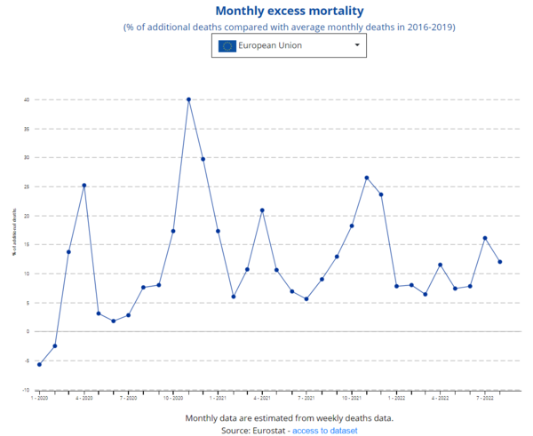
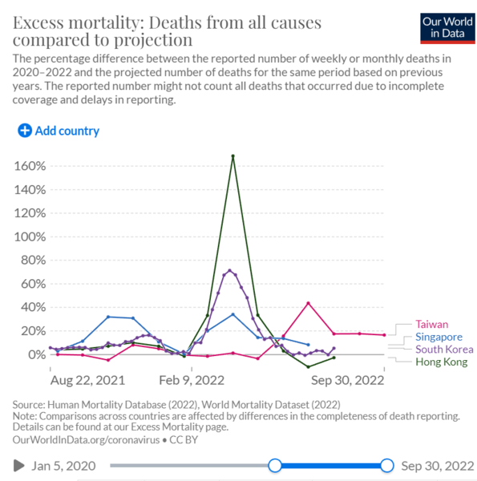

【政治】社會主義國家應該如何管理資本
2022-07-17 00:21:00
原文网址：https://blog.udn.com/MengyuanWang/175790558
資本在社會主義下的定位
自由市場和民選體制，並不是資本主義的核心價值；資本利益的最大化才是其體制設計和演化的先決條件。因此，資本必須凌駕於政治權力之上。然而資本來自不同行業和集團，那麽資本主義政府的主要任務自然成爲充當他們談判、分贓、妥協的平臺，因此才采納民選制度、因此才要求絕對自由市場、因此才强調三權分立、因此才美化權力制衡、因此才吹捧多元社會、因此才標榜自由媒體、因此才設計政黨輪替、並將游説業制度化以便依賴半公開競標來壓低資本收買政客的價格費用。
相對的，社會主義的基本原則在於追求社會整體利益的最大化，這和資本的利益有著根本性、絕對性的衝突，所以必然導致後者的抵制和反撲。而唯一足夠壓倒資本、保護全民公益的力量，顯然只有國家機器；那麽很自然的，政治權力必須凌駕於資本之上，這正是中共素來堅持黨的領導的基本原因。然而資本主義國家所采納的體制選擇和管理方法，並非全無是處，尤其市場經濟在短周期的消費性行業具有先天的高效優越性；社會主義國家要發展經濟、改善民生、充實國力，也就必須運用部分市場經濟原理。但我們不能忘卻初心，所以切忌人云亦云、盲目模仿，必須從第一原則（First Principle）出發，客觀、理性、獨立地評估每個政策細節和專業特性，選擇整體收益的最大化。與此同時，還必須仔細檢驗這些收益的分配問題，運用公權力來避免贏家全拿、或甚至以鄰爲壑的現象，並且盡可能進一步主動平衡社會各階級的受益。
對資本腐蝕政治權力的預防
因爲政府是對抗自私豪强、保護社會公益的鬥爭中，唯一足夠强力的防綫，負責執行的衆多官僚自然而然地成爲既得利益集團欺騙、滲透、收買和阻撓的重點對象。這早在農業文明初起，就已是政治管理的最大難題；尤其中國是全球第一個建立中央集權官僚體系的國家，有著兩千多年的激烈鬥爭經驗，近年來又特別注重紀律和監察，將這些工作制度化、常態化了，因而無需筆者多所置喙。這裏只簡短討論利用科技來提高内部監管效率的新方向，亦即所謂的e-government電子政務。
雖然表面上，電子政務是將民間網絡技術應用到政府公務的自然優化過程，有著全方位、多角度的效率改進，但從國家治理的大局來看，其中最重要的顛覆性新功能，並不是簡化文書處理，也不是最近一些地方政府所嘗試的用來監管群衆、維持秩序，而是反過來讓國家和民衆能全面監督中低層官僚。在世界各國的諸般嘗試之中，只有俄國深刻瞭解這一點，將查稅、審計這些特別容易得罪資本、引發賄賂貪腐的任務，改爲通過網絡以自動、集中、遠程、匿名的方式來進行，並將過程錄下存證。Mishustin就憑著在國稅局長任内的這個政績，而被一步提拔成爲總理。
中國既有的反腐機制，最大的缺陷就在於彌補有餘、預防不足；而充分利用電子政務和網絡科技來大幅提高貪腐的門檻，是從“不敢腐“邁向”不能腐“的不二法門。這裏的宏觀重點方針，在於利用電子政務，將容易引發貪腐的職權從基層政府手中收回，如同零售門市店被網購統一供貨取代一樣，依照集中管理的原則，在不大幅增加高層組織規模的前提下，盡可能壓縮基層的自由心證空間；這要求從頭檢討各級政府機關應有的規模和任務，而在設計和實驗的過程中，必須尤其强調紀委和監委的積極參與和優先決定權。
市場經濟和資本運作的應有局限
前面提到資本在社會主義體制中的價值，來自市場經濟的效率，因而市場經濟的已知局限，也就對應著資本運作可以被容許的極限邊界。以下我們對自由市場和資本運作的應有局限，依性質做分析討論；請注意，若干行業可能重複出現，這是因爲它們兼有多重不適合自由市場的特性，那麽也就格外不應該開放給以利潤為導向的私有資本。
一．涉及保障全民福利和國家利益的行業
近年一個很有名的學術研究成果，是Thomas Piketty在《21世紀資本論》一書中詳細論證的，市場經濟自然引發資本集中效應：亦即除非國家處於明顯而嚴厲的緊急時期，否則大資本的投資報酬率必然高於整體經濟成長率，因而導致資本財團在全球財富所佔的比重不斷升高；而回顧過去一百多年的現代歷史，只有兩次世界大戰和冷戰前期的嚴峻敵對態勢才足以迫使歐美先進工業國家出手，減低社會財富的集中程度。這是中國政府思考資本管理這個議題時，必須牢記的歷史事實。
美國經濟學界自Milton Friedman以來，一直鼓吹有效市場假説（Efficient Market Hypothesis；雖然他自己不用這個名字，而後世則原本把它稱爲新自由主義，Neoliberalism，但NeoLib後來擴張成爲政治、外交、戰略層面的廣義信仰，因此本文所討論的狹義假説不適合采用此名稱），宣稱絕對自由的競爭是最公平、最高效的經濟體制。這很明顯是受財閥資助、控制和指示而有意編造散佈的謊言：不但他們如何被收買的過程證據確鑿，而且很簡單就可以看出，市場經濟下的所謂自由競爭，既有的財富資源當然是勝負的決定性因素之一，財團先天占盡便宜，毫無公平性可言。一旦勝出，追求利潤固然可以靠高效運作，但形成壟斷以盡情剝削用戶的獲利遠遠更高，所以絕對不能反射性地把市場經濟和私有資本當成萬靈藥。
這裏的頭號負面案例，正是被前述的腐敗經濟學界所徹底忽悠的美國：居然連軍隊、警察和監獄等等國家政治權力的直接體現都做了私有化嘗試，然後自然遭遇了可以簡單預見的諸般嚴重弊端。但從與本文主題相關的經濟治理議題來看，更多的問題出在一般中國人認爲應該是優先保障全民基本福利的行業，例如大型土木基建，向來是美國國會議員圖利本地土豪的主要利益輸送通道，其結果是天價的支出和荒謬的時長；例如紐約市Hudson河底的百年鐵路隧道North River Tunnels年久失修，在2011年又被颶風水災淹沒，雖然嚴重影響了美東鐵路主幹綫和紐約市向西面郊區通勤的交通，聯邦和兩個州政府依舊扯皮到2020年才正式撥款啓動重修計劃，叫做“Gateway Program”，總價123億美元，預計2030年完成第一階段。
如果以上的預估數字，因爲計劃還在紙上籌劃階段，要到明年才動工，所以尚不含超支和延期而不夠驚人，我們可以看看德國的既有例子。柏林新機場（Berlin Brandenburg Airport）從2006年開工，原定以28億歐元的價格，在2011年完工使用；實際完工時間是2020年，總價103億。或者Stuttgart市的鐵路地下化工程，叫做Stuttgart 21，2010年動工，當時預算45億歐元，預定2019年完成；最新的總預算成長到91.5億，最早要到2025年底才能完工，但當然沒有人真正相信這些數字。相形之下，中國既有的基建國企，是國家高速高效發展的基石、國際競爭的利器，甚至不應該對有敵對心態的外國（如印度）提供質優價廉的服務，然而有效市場假説的信徒依然鼓吹自毀長城，要把所有企業私有化。
再舉美國的客運鐵路爲例：Amtrak正是出於美國國會對有效市場假説的迷信而被勉强私有化，可是客運交通這類基建的價值，原本就在於其對人民和社會所提供的便利，而不是利潤的產生和資本的纍積，所以政府以公費補貼不但合理、而且必然。美國國會在石油財團的游説下，全力資助機場和公路的建設，對鐵路的維護和升級卻一毛不拔，不但不願投資高鐵，甚至想方設法要置Amtrak於死地，其結果是整體經濟效率的損失和碳排放的大幅增加，最終還是由國民和世界為資本間接買單。中國在成功建設高鐵體系之後，强行將唯一獲利的路段私有化，毫無邏輯條理，顯然是對自由市場主義教條的盲目尊崇，亟需懸崖勒馬。
其他的基建項目，例如電力傳輸、能源管道、集中供熱、有綫電信網絡等等，不但也都以服務民衆為首要任務，而且還有天然的獨占性（Natural Monopoly），更加不適合自由市場和私有資本。此外還有廣義上的基建，包括醫療、基礎教育、環境保護等等，同樣是以服務國家和全民為終極目的，金錢上的效費比並非頭號考慮；而且這裏還有另一個額外的效應，亦即這些行業的實際收益和成本，基本不可能在市場上精確測量定價，所以强行私有化的結果，只會帶來嚴重的價值破壞（Value Destruction）。以下，我們針對這一點做進一步的詳細討論。
二．隱性的社會收益和成本
自由市場的最大困難之一，在於某些行業内含隱性的社會收益或成本，先天抗拒自由市場機制；這可能是因爲這些收益或成本，主要影響市場參與者（Market Participant）以外的民衆，也可能是行業的核心商品，根本無法精確地用金錢定價。此時市場的平衡價格，就不對應著整體利益的最大化；如果放任私有資本進入這些行業，他們可以利用價格的不確定性，做簡單套利（Arbitrage）而輕易獲取暴利，同時完全忽略市場之外的成本。其結果是，其他的利益相關者（Stake Holder）必須為資本所得的利潤付出數倍或數十倍的代價。因而這些私有企業的效率越高，對國家社會的損害就越大。
醫療界是一個重要的例子：人命是沒有明確價格的；它對作爲第三者的商人基本沒有價值，對病人和家屬來說，卻近乎無價之寶；換句話說，需求曲綫純粹反映個人財富，完全不對應社會整體利益。所以若是强加市場機制、把醫療私有化，放任資本運營管理的醫院爲了追求更高的利潤，可以簡單地將醫藥價格不斷向上提高，直到多數人即使傾家蕩產也負擔不起爲止。然後醫療資源自然進一步集中到只爲少數富人服務的方向：例如整形外科成爲重點投資的大熱門，真正能挽救許多生命的疫苗和抗生素卻因無利可圖而被荒廢。這並非空言恫嚇，而是美國醫療界在過去40年的精確寫照。
另一個明顯的例子是基礎教育和高考選拔：事關每個孩子的前途、國家新世代的思想、和社會階級的流動性，若是交給市場任由商人自由買賣，前述的重要考慮自然會被完全忽略棄置，私營企業追求利潤最大化的結果，必然又將所有資源向富豪階級集中，整體花費大幅增長，選拔出來的所謂精英卻越來越多是資質魯鈍的富家子弟。除了巨富獲利之外，絕大多數人民被迫付出慘重的代價，而且更糟糕的是，國家治理水平和學術風氣也因而嚴重腐朽，進一步摧毀系統自我反思、改革、糾錯的能力。在這方面，美國又一次成爲值得我們警惕的負面先例。
然而正因爲歐美的基礎教育和人才選拔被市場機制和私有資本徹底腐化了，執政者對有效市場假説的迷信反而更加强化，連環境保護這樣明顯難以定價的議題也強要削足適履，硬是人爲地創造出金融衍生品市場；這裏我指的當然是碳排放交易。事實上，碳排放向來由企業自己説了算，監管工作的難處在於測量、審計、核實，而不是收錢；碳排放市場不但不解決核心問題，而且提供公關烟幕，方便污染性企業造假作弊。歷史上劣跡斑斑：例如甲烷排放一百多年，一直到去年歐盟發射了偵察衛星，才確認美俄能源公司一直系統性地低報數倍；又如“碳補償”被Disney和JP Morgan玩成騙局，也已被證實（參見《These Trees Are Not What They Seem》）；“碳回收”則違反熱力學第二定律，是21世紀版的永動機，因而毫無經濟效益（參見《The Silliness of Carbon Capture and Sequestration》）。歐美政客只在乎作秀欺瞞選民，這是他們體制的弱點；中國有著務實的政治風氣，毫無理由盲目引進西方的糟粕。
三．長周期的戰略性產業
自由市場的另一個原則性缺陷，在於資本追求經風險調整的收益率（Risk-Adjusted Return）必定引發的短視趨勢。一方面長期性投資代表著資金套牢，無法轉向投入新出現的高回報資產，帶來所謂的機會成本（Opportunity Cost）；另一方面這些長期大型開發計劃自然會有極高的風險，使它們更加不對資本家的胃口。然而幾乎所有國運所繫的重大產業發展項目，例如半導體、發動機和大飛機，都需要很長的無回報投資時段，往往數十倍於消費性產品的開發周期；放任資本對戰略級產業發展做技術評估和投資決策，顯然是自我毀滅國家經濟前途的捷徑， 1980年代英美的去工業化政策是前車之鑒。
長周期產業又可以分爲兩類：第一類是技術迭代升級，先天就需要極長的時間和天量的投入，例如大商用飛機的全新機型，從設計到交貨，要十年左右；先進發動機更爲耗時，從預研到實用，需要大約20年。如此長的研發周期，市場機制根本不可能包容，資本只有在企業已經預先完成寡頭獨占（Oligopoly）的前提下才可能考慮投資，然而就連波音和空客兩大巨頭都依舊高度依賴各式各樣的政府補貼，那麽在中國體制内也就毫無必要強行私有化。
第二類的長周期產業，是迭代升級的實際周期並不長，但是中國落後太多代，所以起始追趕過程對應著較長的時間。因爲短周期適合私有資本，這一類產業不須要國營；然而初始階段的技術落後，代表著絕對自由市場無法自然提供資本和技術纍積，所以也不能完全放任。正確的做法，是由中央統籌管理、逐步調整，通過暫時的保護性貿易壁壘和針對性的間接補貼（亦即補貼消費方，以創造需求，而不是直接付給企業），一方面屏蔽國外行業龍頭的降價打擊，另一方面維持國内企業彼此之間的競爭壓力，直到趕上世界先進水平，可以聽任市場決定輸贏爲止。
上面所描述的有效產業政策，中國政府並不陌生，光伏和動力電池都是極爲成功的經典案例。然而在半導體產業上，卻很奇怪地選擇放任地方政府以招商形式來建廠，補貼直接付給廠商；這是早年消費性低檔工業的速成辦法，對技術性高、追趕期長的產業完全不適用，結果自然是引來騙補的短綫操作，甚至有同一個騙徒在不同省份獲利兩次的現象，必須儘快改正。
四．對整體經濟有負面影響的獲利機制
除了前面所討論不應容許私有資本運作的三大類產業之外，即使是原則上適合藉市場機制來提升效率的行業，絕對的自由也是過猶不及，不能完全放棄監管。這是因爲自由市場先天内含損人利己的獲利手段，過度運轉對整體經濟反而有負面作用；其中最重要的，是寡頭獨占和金融操作。
任何行業的資本纍積到足夠程度，企業兼並就成爲進一步提升營收和利潤的最佳手段，而不斷兼並的終極目的是寡頭獨占。這一方面消弭競爭壓力，以便人爲地維持不合理的高價；另一方面提高入場門檻，容許寡頭削減投資，而無懼新競爭者的出現。前者等同變相對消費者抽稅，從而遏制整體經濟規模和成長；後者在國家的宏觀尺度上，更代表著備用產能的不足，使供給鏈失去應對緊急事件的冗餘，在全民面對困難和災害的同時，不但只能由國家買單負責收拾善後，而且還讓資本有了進一步大幅提價獲取暴利的機會。當前美國的能源市場，在國際原油價格上漲50%的背景下，汽油零售價卻上漲了75%，柴油則上漲了100%，就是個典型的例子。
金融業唯一的正當任務，是收集社會多餘的儲蓄，轉交給實體產業做明智的投資。在能夠達成這個任務的前提下，越簡單、原始、基本、透明，就越好。這是因爲一切金融產品都是虛擬的，可以無限複雜化，從而憑空創造絕對的信息不對稱，而不必要的信息不對稱程度越高，資金配置的效率就越低。英美經濟金融化、虛擬化，是他們國家的大不幸，中國完全沒有理由去模仿。何況在金融監管上，中方還遠不如SEC嚴格，導致各式各樣的虛僞炒作橫行，基本毫無代價和後果。這在每年GDP成長5-6%的時期，危害還不明顯，未來降到3-4%的時候，如果依舊放任資本或學術界玩弄金融，使詐騙成爲致富的最佳手段，投資實業相形見絀，人人不是想著空殼上市收割韭菜，就是要開銀行或銀子銀行，那顯然不是國家之福。尤其中國科研學術界的誠信程度還遠遠落後英美，Nigeria的現狀可供借鏡。
五．防範資本的洗腦攻勢
美國的資本家爲了維持自身地位、保障劫貧濟富的政策不受阻撓，很早就明白必須掌握話語權，系統性地扭曲學術結論、製造錯誤認知。爲了這個目的，百多年前以玩弄骯髒商業伎倆聞名于世的巨富Rockefeller特別資助設立了芝加哥大學，尤其注重經濟系；多年後Rockefeller很得意地稱之爲他一輩子獲利率最高的投資。
然而1929年的股市崩潰以及其後的經濟大蕭條，徹底摧毀了資本家在美國民衆眼中的形象，他們在學術界的代言人也因而消停了一代人的時間，直到二戰後美國經濟强力復蘇，剛好芝加哥大學獲得傳銷奇才Milton Friedman，得以重啓洗腦工作。然而他的影響力曾經受到東西兩岸名校傳統經濟學家的抵制，被暫時局限在美國中西部，因而獲得“淡水經濟學”的外號。
到了1959年，美國富豪們決定另開戰綫，由Ford和Carnegie家族聯合出資，對當時沒人重視的商學院體系大幅投入資金和公關資源，使其成爲比經濟系更重要的理論來源和教育中心。因爲商學院原本就是為在職進修而設立的職業教育機構，沒有任何歷史傳承下來的學術尊嚴傳統，所以可以更加一面倒地吹捧貪婪自私的社會達爾文主義。這完全符合Reagan的治理哲學，於是在1980年代，商學院和將其教材理念付諸實踐的Jack Welch都成爲最熱門、最尊貴的公衆膜拜對象。
本文的主旨在於討論社會主義國家應該如何管理資本，因而不得不特別强調預防資本買通學術界以扭曲管理原則的重要性。中國早有獨立於美式的經濟學理論，是改開以來守護國家不落入錯誤政策陷阱的思想盾牌；然而近年來各大學積極引進美國商學院的體制和教材，照單全收，是一個很大的隱憂，應做系統性的檢討重整。除此之外，國内資本家也已曾學習美方，投資高等學術機構，這是占據思想高地的企圖，有嚴禁的必要。
【後註一，2022/07/19】關於正文所討論的第四點，亦即即使在短周期的消費性產業，也必須提防自由市場過猶不及，其背後有個一般人不瞭解的數學常識，在社會學和政治學上有廣汎的適用性，不事先警惕的話，就會引發錯誤直覺。這裏我指的是“Asymptotic Expansion”（“漸近展開”，參見《Wikipedia》）：與大一微積分所教的Taylor Series（泰勒級數）不同，絕大部分社會學議題的解決方案並不收斂，而是一個發散級數。換句話説，開頭幾步似乎有益，但達到某個程度之後，越是加碼、偏差反而迅速增大。產生這個效應的機制也不難理解：任何政策都會有受益不平均現象，既得利益者必然會試圖固化、推進其作用，因此過度加碼自然是爲他們順水推舟。
【後註二，2022/07/21】上周在《龍行天下》（參見【觀點│龍行天下】王孟源博士）談了美國經濟學理論之後，有在金融系教書的朋友寫電郵來抗議。我想行内的讀者可能都有類似的質疑，所以把對話（私人通信，中英夾雜，請見諒）轉錄於下，供大家參考：
問：1、關於 Efficient Market Hypothesis (EMH) ：您在節目和最新博文中都批評經濟學家以EMH 鼓吹宣傳自由市場體制的高效和公平，但就我們所學，EMH 這一詞只是財務學中一種拿來檢驗股市效率的定義型假説。簡單來說，如果股票價格能迅速反應新訊息，調整到新價位，這樣的股市就被認為是高效率市場。EMH 的論點是，在高度競爭下，任何投資策略都不可能持續勝出，若當真如此，大家就不必投錢給基金經理人了，可說是讓華爾街十分感冒的金融市場假説。經濟學家並沒有以EMH 為真，而是做了不少實證研究，且研究結果頗為分歧，以致於提出EMH 的Eugene Fama, 和以行為財務學（behavioral finance) 反駁 EMH 的Robert Schiller 同在 2013 獲得諾貝爾經濟學獎。 既然以美國股市檢驗EMH 都未能成立，很難想像會有經濟學家將EMH這已具有特定意義的專有名詞，擴張應用到其他市場，甚至經濟體制宣傳，至少我們從未聽說。
2、關於現代貨幣學派理論 （modern monetary theory， MMT)：您在節目中將MMT， QE 和 Milton Friedman 作連結，事實上，MMT 並未被主流經濟學家接受，它與Milton Friedman’s 貨幣學派理論 （monetarist theory ）完全不同。MMT 的支持者, 一般多為左派，其中包括 Sanders, 他們認為只要生產供應面沒有問題，政府可印鈔並大量舉債來擴大公共支出，不用擔心赤字和通膨，就像是日本長期以來的做法。 Friedman 貨幣論則認為，以增加貨幣供給來降低利率，對產出和就業的刺激效果都是短期的，所有增加的貨幣最終都會反映在變高的物價上。因此 QE 其實是偏離了 Friedman 貨幣論的主張。
3、關於 Larry Summers: Summers 固然學術能力傑出，但長期以來在國際上推動華盛頓共識，俄國經濟私有化和亞洲金融風暴時，他是財政部高層，並且大幅放鬆金融監管，個人也因此得到華爾街極大回報，不像是您會推崇的人物，我們覺得十分困惑。
答：首先，因爲我早年已經確認美式經濟學是騙人的東西，自然沒有耐心捏鼻子太久去反復鑽研所有細節。其次，我讀任何題材，向來都懶得記專有名稱；這是因爲我讀書求的是邏輯脈絡，而不是標簽，即使當年學物理也是如此。此外，要在不到一小時的時間，解釋100多年的經濟理論演化，不Play fast and loose是不可能的。
所以你的抗議，在字面上都是對的，但在實質上不影響我的邏輯敘事。例如芝加哥學派的宗旨，的確是歸納市場萬能，本質上等同金融系所談的EMH；事實上後者還標識為“假説”，Friedman可是把它當成絕對真理來傳播的。問題在於經濟系沒有賦予這個重要教義一個簡單易懂的英文名字（There is NO such thing as the “Market Omnipotence Theory”!），所以我只好去借金融系的Analogue，並不是在指控金融系也相信市場萬能。
至於MMT，我知道是近年民主黨系經濟人搞出來的東西。不過我的觀點是這樣的：Milton Friedman開始的Monetarist Theory在學術上似乎很Innocent，但實際執行起來（別忘了，我在節目中特別先Qualify，我所解釋的，不是那些理論的學術版本，而是它們在行政上的實際影響），就是遇到問題就印錢。MMT只不過是自然的下一步，鼓吹印錢可以是無限的。很反諷的，這其實反映了Sanders他們的無奈：過去幾十年的印錢，都立刻進了財團的口袋；既然小老百姓排在最後，那麽只好鼓吹無限才輪得到他們，事實上Biden也的確因此而做了較合理的分配。這一點，我在節目中也提到了。
還有Summers，他當然是Neoliberalism的健將，但這一輪通脹連Stiglitz都爲了民主黨的政治正確而事先多番Minimize the threat，Summers是成名經濟人中唯一一個堅持高調警告的。我已經考慮了他90年代的犯行，所以才只稱他為半個説實話的經濟學人。畢竟Sachs也曾全力鼓吹休克療法，不是嗎？這裏的問題在於整個美式經濟學的基礎就是歪的，不可能有完人；只要他們用心不太自私，偶爾有瞭解真相的智慧和說實話的勇氣，就已經遠勝芝加哥學派的全部。
【後註三，2022/07/24】正文舉當前美國能源市場為例，解説寡頭壟斷為資本所帶來的暴利。除了售價漲幅遠超原料之外，上月公佈的毛利率數字是從年初的略低於20%直升到60%，現在我們有了净利率的成長數字（參見《Top U.S. Refiners Set For 652% Surge In Profits》），在短短幾個月躍升為7.5倍，可供讀者參考。
【後註四，2022/07/25】最新的統計數字指出美國是今年上半年全球最大的LNG出口國（參見《The U.S. Becomes World’s Top LNG Exporter》）。當然這裏的附帶結果，是美國國内的天然氣價格也成倍上漲；所以6月8日Freeport LNG Terminal爆炸，對Biden政權控制通脹的企圖，是略有小補的。
【後註五，2022/07/31】正文中提到美國因迷信市場萬能，連軍隊也硬是私有化；這除了對外用兵交給傭兵公司之外，也反映在正規軍的生活管理細節上，幾年前海軍補給賄賂案醜聞（參見《Fat Leonard Scandal》）是一個例子，今天又看到另一個案例（參見《U.S. military-run slot machines earn $100 million a year from service members overseas》），多個媒體報導，美軍在海外基地普遍設置賭場，供無聊的士兵玩樂，每年從這些原本薪水就很有限的底層官兵手中榨取金錢，進賬超過一億美元。
【後註六，2022/08/02】這兩天因故拿美國經濟和金融的一些歷史記錄來玩耍，偶然注意到一個以往沒聽見其他人討論過的小現象，在這裏和大家分享，參見下圖。這裏所用的數據是1947至2022年的真實GDP（Real GDP，亦即排除了通脹的影響），每季一個資料點（Quarterly Data at Annual Rate，含Seasonal Adjustment季節性調整，亦即排除了淡季和旺季之間的波動）；有興趣複製的讀者，請移步到《Real Gross Domestic Product (GDPC1)》，下載資料到電子表格，然後進行以下的三個步驟：1）取對數；2）消除斜率（De-trend；這75年的平均GDP年增率是3.07%，相當於每季增長0.75%，我們把這個平均增長率從數據中扣除）；3）適度平移放大之後，將時間序列製圖為曲綫。

解讀這張圖的重點觀察，在於美國二戰後75年的經濟發展史，可以分爲三個明顯的段落：1947-1964是高速發展期，1965-2007期間雖有過滯脹，整體依舊算是穩定成長，2008至今則增長乏力。有趣的是，1964年是美國投入越戰的起點（參見前文《美國小官僚的大錯誤》），而2007年則發生了subprime Crisis次貸危機。美國的沒落咎由自取，在衰頹的過程中還忙著殺人越貨、到處放火，真是邪惡至極。
【後註六，2022/09/10】博客曾在2019年反復發文以將波音衰敗的起源和過程介紹給華語世界（參見《波音衰敗之源》一文總結更早的其他4篇文章），其主旨正是本篇博文中所討論的，美國商學院體系在上世紀後半被資本收買，因而有意扭曲教程，全力鼓吹短綫營運和金融炒作，由Jack Welch在GE身體力行、發揚光大，然後傳染到美國實體工業的另外兩個巨頭：波音和Intel。現在波音已經走上不歸路，危機後的新任CEO居然依舊是GE的Alumnus（校友？），新總部搬離芝加哥卻不是回歸西雅圖，而是轉往Virginia以便就近游説國會，顯然是準備進一步放棄民航業務，以專注在高利潤的軍工生意上。
今天看到PC行業的爆料天王MLID透露（參見《Intel’s Xe Odyssey is Over: Discrete ARC is Effectively Cancelled》），Intel因財務緊張而不得不放棄（Give Up，這裏他指的是Intel將只象徵性地生產銷售極少量產品）剛剛重啓的新一代GPU產品Archmage，綜合上個月因同樣考慮而終止的Optane永存技術，難免讓人唏噓。其實Intel步上波音後塵，要晚了十多年（正如波音自我毀滅的起點，也比GE晚了十多年），到2005年換上第五任總裁Paul Otellini才是金融財務出身；但他在任八年，對公司的路綫、人事和文化有著深遠的腐蝕效應，而且挑選來接任的Brian Krzanich和波音的Muilenburg一模一樣，是工程專業做不好、半路出家轉攻“經營學”的“科技管理人才”，再經一任又是CFO出身的Bob Swan，公司已經積重難返。等到了2021年，GE和波音的教訓在美國思想界慢慢傳開，Intel的董事會終於把幾年前被迫出走的技術派主管Pat Gelsinger求回來收拾殘局，然而16年的沉厄再遇上重新崛起的競爭對手AMD，他力挽狂瀾的前景並不樂觀。
這裏最令人失望的，在於連Intel董事會這樣的美國商界精英都在兩年前就知道必須洗心革面，而我在第一時間就努力提醒的中國商業界和商學院卻依然無動於衷，擺明了要繼續害國自肥到底。唉，只能等中央出手整治了。
【後註七，2022/09/23】今天看到銀保監會的公告（參見《银保监会：地方政府隐性债务的增量风险已基本控制 存量风险化解正有序推进》），有點感觸，建議大家去閲讀瞭解。這些“成就”（我打引號，並不是因爲方向不對，而是任務還沒有完成），都是正確的方針，以短期的痛苦，換取長期的發展，而且執行上阻力極大，幾年下來最高層仍在堅持，這在西方體制下是無法想象的。當然決策明智，並不代表細節上不會出問題，然而事關長遠的國運，絕不能遇難而退；部分民衆的經濟利益也受損，請記得這是為國家公益的必要犧牲。
【後註八，2022/10/19】有住日本的網友私下問我對少子高齡化的對策，以下是我的回答：
我對少子化和高齡化這些人口議題，向來不是太擔心，因爲它們剛好幫助落後國家追趕先進國家，對人類社會整體來説是一件好事。未來幾十年，中國作爲先進國家，如果能夠不斷推動理性、邏輯的改革，掃除社會中以私害公的利益集團，將生產發展效率最大化，那麽即使因爲人口結構問題讓出一些低端產業，仍舊能維持很高的生活水平。換句話説，人口結構並非日本衰落的決定性因素，過去30多年面臨美國連串打擊以及台灣、韓國、大陸的競爭而沒有做出正確政策應對，才是失敗的關鍵。
【後註九，2022/10/29】前兩天留言欄有被反中集團洗腦的人，對新冠防治問題妄下評語，讓我非常失望；難道博客對昂撒系媒體扭曲事實的伎倆，討論得還不夠嗎？八年多來，我反復解釋並示範幾千次，做分析第一步就是要找可靠的第一手資料。在這個議題上，所謂的第一手資料是例如這個網頁《（EU） Excess mortality hits +16%, highest 2022 value so far》）。爲了方便英文不好的讀者理解，我簡單解釋一下；請看下面這張圖表：

這條曲綫是2020年以來，歐盟的“額外死亡”“Excess Death”佔2016-2019平均死亡人數的百分比。因爲新冠致死的受害人不一定在死前死後做過檢測，額外死亡反而是估計其人命代價的最佳指標；這一點博客在2020年疫情早期就解釋過，後來《The Economist》還因此專門反復去做統計。這裏最驚人的結論，在於歐盟的額外死亡率，自2020年3月之後，就以10-15%為中心值做上下震蕩，並沒有因爲疫苗或新變種而緩和。當然，2022年的數據可能受到經濟危機的影響，但是事關每月多死5萬人（考慮人口比例，相當於中國每月多死13萬人），在有明確定論之前，根據保守原則，謹慎斟酌對策，才是爲政的正道。
【後註十，2022/10/30】有興趣進一步瞭解額外死亡率的讀者，還可以參考另一個專業網站《Excess mortality during the Coronavirus pandemic (COVID-19)》，然後選擇不同的國家和年齡區間。2022年額外死亡率居高不下的重災區，正是西歐國家，例如德國和英國都還在15%左右；相對的，美國在5-10%之間，俄國則基本爲零；其中美國算是典型，和全世界（中國除外）平均值最接近，比前兩年有顯著下降，這也和指出Omicron毒性有所降低的其他證據相吻合。至於年齡，在德國是60幾歲的人貢獻最多，英美則是青壯年；這可能是因爲更年長的老者在2020年和2021年首當其衝，健康狀況較差的已經被淘汰過了。
這裏最可怕的觀察角度，在於歐美早就躺平，所以有著相當普遍的自然免疫現象；要考慮中國放棄清零的後果，我建議讀者專注到疫情前兩年管制較爲成功、在最近才失控的地區，它們不約而同地在其後經歷一個極大的死亡高峰，例如新加坡5月為34%、台灣7月為44%、南韓5月71%、香港169%（參見下圖）。因爲中國的防疫比這些地區還要嚴密，自然免疫程度更低，如果不做好準備，可以預期開放之後會面臨更劇烈的死亡潮；單月峰值50萬人以上（若類比南韓，為64萬人），第一年總額100-200多萬人（若類比台灣，前五個月為106萬人；若類比香港，則為三個月220萬人；請注意，香港可以在疫情全面蔓延之後重新清零，中國因體量差距，很可能無法做到），是合理並相對保守的估計（請一並參考博客兩年前有關東南亞人口對蝙蝠携帶冠狀病毒具有歷史抵抗力的討論）。

從上面的估算，可以進一步推演，討論“犧牲人命換取經濟產出”的合理性。首先，經濟學認爲國民人命的金錢價值大約為人均GDP的150%，所以上面估計的額外死亡人數相當於中國GDP的0.2%，的確低於一般估算清零政策的經濟代價。請注意，經濟學裏的人命價格是由個人自己評估的結果，並不隨年齡增長而下降，所以再加上躺平政策吹捧者所常提起的“老年人沒有生產價值”那個論述，似乎放棄清零保障經濟是明顯划算的事。然而這個估算忽略了新冠後遺症對青壯年的危害，以及額外死亡代價主要由弱勢階級承受的事實，更別提尊重生命權作爲最基本人權的中國傳統政治哲學，因而在精確的計算權衡和足夠的彌補措施出籠之前就貿然接受，有殘忍、自私（如果有好健康和好健保）或愚蠢（如果沒有）的嫌疑。以我個人爲例，因爲台灣的入境防疫要求，連父親的喪禮都無法出席；一旦入境隔離在10月13日被取消，我當天就搭頭一班合格飛機回來探親。我自己當然喜歡解禁所帶來的便利，但也明白這是由額外死亡幾萬條生命所換來的，所以絕對不會去主動做要求。
【後註十一，2022/11/29】上面【後註十】的討論，用錯了一個經濟學數據，在此特別致歉並更正；不過實際上修正細節反而大幅加强核心論述，這也是上個月我掉以輕心，沒有仔細去核實的原因之一。這裏我指的是人命的經濟價值：生命的等價估算，不是GDP的150%（那是一年“quality life”的價值，也就是少一年病痛纏身、可以自由走動），而是人均GDP的150倍；那麽100-200萬人的額外死亡，相當於10-20%的全國GDP，遠遠不是划算的交易。不過實際上，病毒致死會篩選老弱病殘，所以這些估算原本就不準確，反而分散了對人命道義價值的關注。
【後註十二，2023/01/01】今天看到一則僞托Napoleon的笑話（實際上似乎是1920年代德軍總參謀長Kurt von Hammerstein-Equord的評論，參見《I divide my officers into four classes》），剛好觸及多年來在心中醖釀的一個擔憂，在此和大家分享：有人請教Napoleon用人的基本原則，後者回答說，那簡單得很，我考慮兩個維度：聰明智慧和勤懇努力，兩者兼有的可以帶兵指揮，兩者兼無的則當底層士兵。提問者追問，那如果只有其中一個優點呢？Napoleon答道，只有前者的適合出任最高級將領，但只有後者的必須趕緊槍斃。
這個笑話背後有很深刻的道理，亦即處理一般日常行政運作的領導幹部（或者急著出論文的年輕學者）固然必須有些基本才智，但最影響成效考績的還是其勤勞肯幹的程度（忽略運氣和吹牛拍馬、拉幫結社等中性或負面因素）；然而越往高層的大方向政策取捨，全方位、長周期的深入思考、事先預謀、精確規劃來追求節約並優化人力、物力、財力和時間（換句話説，幫助國家人民“偷懶”）就越重要，純粹憑藉用功努力的事後彌補也越不可取。問題在於官僚體系下的考選提拔必須有統一規則，既然中低層行政以勤政為首要標準，最終拔擢出來的高層並不見得會有足夠的智慧。以上的敘事正是《Peter Principle》的邏輯基礎：無能將帥累死三軍，例如中國政壇多年來在被打臉無數次之後依舊有人堅持崇美，就是這個原則的彰顯結果；學術界那許多名不符實的院士，也同樣來自這個機制。
【後註十三，2023/01/10】過去兩年來，美國SEC（Securities and Exchange Commission，證券交易委員會）在前MIT教授Gary Gensler領導下，可謂脫胎換骨。他一上任就先拆了SPAC那個定時炸彈，然後對所有SEC轄下的金融產品和市場做了全面而且持續的檢討和監督；這裏我是親身體驗，因爲SEC本身的人手不夠，必須分發工作給學術界，我的小孩因而一連兩個學期替他們打工，分別研究了ESG（environmental, social, and corporate governance；這是最近拿新能源來騙錢的常用標簽）應有的標準，和某種金融衍生品的交易細節。今天又看到這則新聞（參見《McDonald’s former CEO agrees to pay $52.7M in SEC settlement》），Gensler連個別高管搞爛公司後，拿巨額解約金退休都不容許，這可是美國20年來首見的案例。再對比本周稍早的報導（參見《FTC proposes ban on non-compete clauses in employment contracts》），另一個商業監管單位FTC（Federal Trade Commission，聯邦貿易委員會）準備禁止Non-Compete Clause（NCC，競業禁止條款），也是冒資本財團利益之大不韙、爲國爲民奮發改革的案例。SEC和FTC的主管雖然只是副部級，但作爲金融和工商專業的領導，對國運有著絕對性的影響；光是SPAC一事就可能已經為美國節省了萬億美元級別的潛在損失。相對的，中國最重要的兩類專業主管，亦即金融和科技，在2022年反而更加醉生夢死、圖利強豪，怎不讓有識之士憂心如焚？
【後註十四，2023/03/17】根據《經濟學人》報導（參見《China’s Communist Party takes aim at hedonistic bankers》），最近幾個月中國政府對“高等金融”（亦即投資銀行和對衝基金等等）的態度急轉直下（“the communist party has taken an extremely grim view of finance”），讀者可以拿來和正文對比。
【後註十五，2023/04/04】讀者或許已經注意到這件消息《美光被审查背后，中国存储市场要变天了？》；我想指出它可以拿來和正文中那句“屏蔽國外行業龍頭的降價打擊”做對比。
【後註十六，2024/09/12】有報導（參見《Chinas Carbon Trading Market to Encompass Steel and Aluminum Sectors》）稱中國的冶金業被要求從今年年底開始加入碳排放交易。博客已經反復論證，碳交易純粹是圖利金融、獎勵作弊的倒行逆施；上述新聞所反映的，除了執政幕僚群的無知無能之外，還有官僚體系自我擴大職權的普世效應。
【後註十七，2024/10/05】美國法務部、SEC和CFTC於本周聯合執法，以詐騙罪逮捕起訴碳交易/碳市場/碳信用（Carbon trading/carbon market/carbon credit，分別對應著交易的概念、平臺和單位）的大咖CQC Impact Investors（參見《U.S. Attorney Announces Criminal Charges In Multi-Year Fraud Scheme In The Market For Carbon Credits》）。明明整個行業就是純粹詐騙，卻因爲白左思潮和金融利益，即便是有心爲國的官員也無法禁止，只能揚湯止沸地法辦個別罪犯，不過至少勝過中國從上到下的一致被忽悠；考慮這些國際金融詐騙的收益大半會流入美元體系，中方跟風搞碳交易更加是愚不可及。
【後註十八，2025/04/14】有讀者私下來信詢問金融管理的一些原則議題，值得讀者參考，轉述於下。
<問>社會主義國家該如何監管影子銀行？是否應該完全禁止？<答>影子銀行原則上應全面禁止。既然要從事金融行業，就必然内含所有金融架構都先天具備的不穩定性和逐底競爭趨勢，因而當然也應該光明正大地接受監管；換句話說，必須登記為銀行。
<問>全球金融穩定理事會（Financial Stability Board，2012）認為關鍵在於對回購等證券融資交易市場提出最低估價折扣的要求，在合約層級而非機構層級實施有效的資本監管。這項措施是否足夠？<答>所謂“監管合約而不是機構”是典型的開後門藉口；金融合約的複雜性和隱藏風險連創造者都搞不明白，根本不是監管方所可能厘清的。歷史上每一個“金融創新”在初創時風險都被低估，從而反復導致金融危機；中國沒有美國的貨幣霸權和地緣安全性，承受不起後者周期性踩雷的金融管理模式。
<問>王博士在《金融史觀（二）當前局勢》後註三中提及，直接面對大眾的Mutual Fund是值得發展的，請問貨幣市場共同基金屬於此列嗎，是否應當禁止或應如何監管？<答>金融不等於資本！後者包括有利國家的產業資本和危害人類的金融資本；例如任正非是資本家，但他絕對不屬於金融。我曾看到有人將改開前三十年纍積資本的過程説成發展金融，這是標準的利用語義含糊來混淆視聽的狡辯術。Mutual Fund因爲服務中產，將他們儲蓄所得的金融游資集中轉化成產業資本，以較高的企業管理眼光選擇正確的投資對象，所以有其價值。注意這裏的前提是Mutual Fund必須對實體產業提供長期發展資金（Private Equity之危害，正在於他們反其道而行，買下企業後千方百計地榨取資金，直到只剩一具破產的乾尸）才有價值，貨幣投機當然不在其列。我再强調一次，金融的唯一正面價值在於服務實體產業，任何脫離這個任務去追求高報酬率的手段都有害無益。
139 条留言
另一类是40年中被洗脑, 导致迷信市场万能, 比如失败的P2P和允许成立监管要求较低的村镇银行, 本意是希望引入私营资本来解决中小企业融资难的问题. 可是连国有银行都不敢放贷的项目, 最求风险调整收益最大化的私人资本凭什么会主动去承担风险, 帮中小企业解决融资难? 而且风险较大的项目, 中国私人资本已经有仿照美国的风险投资机制了, 根本没必要再搞P2P和小银行.
如今确实到了总结失败教训, 赶紧系统检讨清理这些政策的时候了.
我做原創性見解向來沒有困難，所以也就沒有必要重複既有論述。這篇正文雖然内含一些新論點，但整體來説，主要還是總結過去8年寫過的許多博文。這當然是要有外來的重要管道邀稿，才值得我花時間精力去做。然而正規管道會先修飾改寫，比較尖銳的批評必然被刪，所以這裏的原稿還是有其價值的，希望有體制内人士來博客看到。
「限制私人資本，發達國家資本」這在孫中山先生民生主義中已多有論述，此刻更顯出前賢的遠見。而要能有效達成，也要前段條件滿足之後，才能在政府端規劃執行。
這些誇誇而談的空想家有兩個共通點，就是1）連三人小組都沒有領導過；2）一輩子沒生產過任何實際用品。馬克思至少有自知之明，知道胡猜必然導致出醜；這些人連馬克思的著名先例都不懂得模仿，根本就是不值得評論的不入流人物。
当然如果创新的产品能够获得成功的市场化，就如同貌美聪慧一样是最好的。
就本篇博文而言，对创新和市场化的关系辩证也是一个具体的应用指导。在7月11号的观网左栏文章《魏杰：中国经济破局，必须解决深层次问题》https://www.guancha.cn/weijie/2022_07_11_648743_s.shtml中看到还在想着用市场化来推进创新，真的是感叹这些不食人间烟火的天真和臆想，就想着新的博文有和这个方面的讨论，到时候可以留言讨论这个问题。
其实这些八年来都在先生的博文里有反复论述。不过这么大的系统性理论动作，恐怕得最高方面大力支持才有可能，我们一般人就先尽到自己的力一点点推广
王先生，正文中的引文（The Silliness of Carbon Capture and Sequestration | RealClearEnergyzh）除了表达碳回收毫无经济效益以外，主旨似乎是鼓吹化石能源，贬低风光等新能源，否认全球变暖是气候危机，否认温室气体排放会带来危害。 这些观点显然是能源巨头们创造出来维护自身利益，掩盖实际问题的吧？
關於先生在後註二的回答，我這有一段Alan Greenspan在2011年訪談的片段分享(Youtube:https://www.youtube.com/watch?v=Ck3FuTzZvhI)，當時主持人就美國國債被降評，詢問Greenspan對美國債信的看法，Greenspan嚴肅答道:「..The United States can pay any debt it has because we can always print money to do that.」(旁邊一同參與訪談的經濟學者表情相當有戲，顯然震驚於Greenspan的坦白)。Greenspan雖然08年後聲望一落千丈，如果閱讀他兩本跟經濟相關的著作，可以發現他有相當扎實的理論基礎，又有多年的實務經驗，我想就經濟學這門學科來說，他的學養至少不弱於幾位主流的大師(好歹他也當了幾十年的maestro)，MMT大部分的主張者至少還堅持印錢要用在基礎建設跟社會福利上，自由市場派的經濟學者印錢大概會堅持只能用來『維持市場良好的運作』；無論如何，實際執行政策的核心思想的確是一遇到問題就印錢，盡力發揮美元霸權的優勢，“Market Omnipotence Theory”的信奉者還會努力把印出來的錢分配到財閥的口袋。
美國的印錢始自1971年Nixon打破Bretton Woods，要説50、60年代興起的Monetarist Theory純屬巧合，就太小看宣傳洗腦的效果了。90年代的低息政策，和2008年後的QE都只是同一套思路自然演化的結果。
中文的“市場萬能論”並沒有與之對應的英文名稱；這也不是巧合：我說Friedman是傳銷天才，而在名稱上玩花樣，避免被抓小辮子，是傳銷學的基本功。
最近因為TechInsights的一篇報告，傳出中芯國際利用DUV重複曝光，依然做出7nm產品，並且早已出貨，不知王博士怎麼看待?謝謝。
至於中芯成就的技術分量，當前所發佈的那個芯片是極度簡單、微小的特殊用途處理器，並沒有什麽真正的實用價值。當然，要進一步纍積經驗、優化製程，應該不會有什麽跨不過的難關。事實上中芯從14nm進到7nm的速度並不慢，更加指向樂觀的預估。這裏的實際工作，主要來自前臺積電的人員，我猜有不少台裔老青年把最後剩下的一點肝功能貢獻出來了。
從戰略角度來看，7nm或甚至再進步一點，已經能滿足除了頂級CPU、GPU和APU的需要，對保障戰略自主和經濟持續發展，提供了大約5年的喘息空間，而且在當前的國際局勢下，剛好可以大部補償第三世界集團受歐美訛詐封鎖的損失，所以美國必然會試圖禁用設計軟件和設備售後服務以干擾這些應用，後續發展視其國内政治鬥爭的進程細節而定，目前還無法斷言。此外中方要自主開發EUV機器，5年是不夠的；反而國際局勢在5年内有突破性的轉變，例如某些技術先進國家，出現政治經濟社會的全面崩潰危機，是機率更高的解決方式。
我是半导体方向的资深工程师，而且长期跟中芯国际的人合作，这次新闻非常奇怪，我查了一下这家挖矿芯片的公司是加拿大的，网页非常简单https://miner-va.com/，看不到芯片的介绍和说明，只有矿机的介绍。很奇怪中芯国际会选择这么一家国外公司试产7nm芯片，明明可以有国内客户可以测试，不知道是为什么。我个人猜测，一是矿机芯片大量的是重复单元，设计流程上比较简单，二是可能在这个节点上的数字单元库还没有发布，由于发布这些库就会惊动至少cadence和synopsis。三就更别提其他的模拟（类比）IP了，大概率没有，模拟的SPICE model也很可能没有，否则还是会惊动c和s两家。四可能是因为国内的矿机公司都被禁止了，找不到国内的lab rat。 问了下里面的一个PIE，也说是没有。当然也可能是内部有纪律不让说。但实际这颗芯片本身确实还是比较简单，内部其实都是大量的重复单元，设计上应该是保证有些单元坏了也无所谓。当然不知道中芯内部是否测试过上面晶体管的良率。我猜可能yield rate不是很高。所以从量产角度上来说，其实离做手机AP之类的芯片还要努力两年左右，当良率稳定，周边IP齐全了才能开始。 今天听陈凤馨说这颗芯片去年就发布了（我找不到相关资料，所以不可置信），如果是这样，美国后续估计如王博所说，要从C和S两家下手了，如果他们不提供对于中芯7nm的库和模型支持，那估计又要等上额外的五年，国产的EDA tool才能达到可用的地步。 我是一个很希望中国能够突破半导体封锁的人，但美国这么步步封锁，实在犹如如芒在背,如刺在喉，时时觉得异常恶心。但，事实求是，我跟王博看法类似，10年内才能追上现在顶级的各个半导体方向（主要是EDA和深亚微米），依然没有改变。
我在2015年對半導體產業所作的預測，其實偏差不大，稍顯樂觀，但主要還是Trump撕破臉是當時無法預見的。不過從大局來看，這類產業升級和競爭只在全球化潮流下才是終極努力的目標：俄烏戰爭後的世界裏，外交、軍事和貨幣才是最重要的。
(1) 王先生曾谈过, 承平日久, 利益集团就会自然形成世家豪强, 将来必然会打着"祖宗之法"或者"大宪章"来巩固自己的利益, 成为改革阻碍. 现在地方上一些豪强已经初现端倪了, 看来21世纪要靠E-goverment来打击豪强了. (2) 这位周劼去了地方国企江西高速工作, 之前河南村镇的吕弈则发迹于兰尉高速工程. 假如中国没有中铁XX局之类的土建央企, 而是和西方一样搞自由市场, 任由这些豪强发展垄断土建和其它大工程, 最后必然导致天价的基建.
改開40年，縱容得太久、太過分了，就連習近平反腐，都沒有針對性地處理土豪，更別提建立誠實風氣。尤其對學術造假和誇大的絕對放縱，更是貽害深遠。我只不過看得遠、看得清，結果一般人反過來指控我迂腐、情商低、不懂人性。換句話説，許多群衆可以前一分鐘對周劼這樣的事件破口大駡，下一分鐘就轉過頭來對真正有效的根本解決方案嗤之以鼻，渾然不知他們自己的這種反射式的愚蠢、自私和雙標（參考幾個月前的上海防疫經驗），其實才是社會諸般問題的基本根源和進步的最大絆脚石。那麽由既得利益者自由影響和挑選“民意”的西方體制，自然不可能做出深刻的自清改革，其腐化的速度和程度也遠高於一般人的想象。
有人發私信給我，指出周家的地位和權勢並沒有他所誇耀的那麽大。我沒有第一手資料，無法置喙；不過我做上面評論時，已經避免針對特例，而是從社會大局來做討論，只要土豪真正存在，就還是切題的（Relevant）。
又有私信建議，希望我不要對群衆的愚性多做批判，以免有失自己的身份。以下是我的回答，和大家分享：
要真正治理腐敗，必須雙管齊下：一方面從上向下嚴打，另一方面在基層建立公共道德觀念，由每一個人監督周邊的害蟲。如果不先承認群衆愚蠢自私的劣根性，基層公德從何建立起？人情社會，你好我好大家好，正是鄉愿世界，德之賊也。海瑞的清廉兼具秦檜的圓滑，不但違反歷史事實，在邏輯上都是不可能的。
请问论语中“父为子隐，子为父隐，直在其中矣”是人情社会的表现吗？
现代中国的土豪很大一部分就是官员的亲朋好友，倒不是攻击共产党，而是在市场化私有化的潮流下，靠近权力的人就是可以先得月。这恐怕也是习近平没对土豪动手的原因之一，毕竟连贪腐官员都只能搞既往不咎，至于官员的亲属沾光就更难管了。最近开始搞的禁止厅局级以上直系亲属经商是有用的，不过恐怕只能限制土豪蔓延的势头而不能削减。想请问王先生对中国土豪有何应对之策。
王先生反对西式民主的原因之一就是希望阻断钱向权的转化通道，当今中国，权向钱的转化通道是大开的，各路土豪就是明证（包括中央政治局的委员们（比如习近平为了避嫌要求亲属退出各种公司，虽然行为和意图是好的，但也让我们一窥权力顶级家庭都是数亿以上家资））但是更可怕的是钱可以转化为权，而直选正是当今最方便最体面的钱转化为权的途径。但这只是暂时阻断而已，即使中国录取官员不以财产为标准，但是财富，权力，学术门阀的积累加上本身教育体系就向上层阶级倾斜，长时间后权和钱将深度绑定。
爲了對抗資本，必須强化國家權力，然而執行這些權力的人轉過頭來以權謀私是自然的結果。但我也已經解釋過無數次，公益與私利之間的矛盾鬥爭是永恆無止境的，原本就不存在一勞永逸的體制方案。正文中提到的e-gov，是可以為正義一方提供一點助力的機制。此外，可以禁止二等親内在同一個組織内服務等等。歷代帝王做過許多不同的嘗試，個別來看，都可以簡單繞過，而且必然會因年久而荒廢，但那並不代表它們不是有用而值得考慮的政策。
先謝謝王博士在龍行天下中對於通膨結構至少可分四個部分(勞動薪資/原物料/資產價格/工業成品)的說明，一直以來，總覺得官方CPI數據與實際生活感受差距甚遠，心裡知道統計數字有問題，但又無法系統性地說出原因，真可謂聽君一席話勝讀十年書!個人覺得這四個部分裡，勞動薪資帶動的通漲是最不壞的，至少勞動階層有分到果實。
若將來中美完成霸權交替，除了國際組織與規範，中國是否應該積極打破現行許多經濟、經貿的統計方法，一方面有助於話語權的提升，另一方面也有助於有心於社會主義的國家，對國內民生進行更精確而有效的管理。
中國智庫的主要任務之一，是建立自己的統計資料庫，因爲統計數字是最重要的學術話語權；這是我以前反復談過的事。我知道上了年紀記性自然衰退，或許你該設法抽空復習博客的舊文。
王博如何看到中共这次对pelosi访台的操作？我个人感觉虽然pelosi本身的这次行为并没有太大意义，多半处于一己之私。但中共的内宣一如既往的让人看不懂。虽然普通民众的群体智力及其低下，但中共明知如此，却反而手段粗糙的挑拨民意，岂不是更蠢了？着实让人看不懂。后续看起来是会直接进入台湾所谓领海进行演习，进一步切香肠，但似乎也并无必要先挑动民意。
王博对此事后续影响怎么看？是否如跟前段巴基斯坦政府替换毫无作为一样，有后续影响？还是要再等几天看看后续发展再评？
我虽然还有掐住鼻子再忍两年的耐性，但后续一批又一批把台湾当厕所的议员来访，着实觉得头大。
中國自然科研界的問題，如同社科類一樣，也是源於北京清華大學在思想和文化上的嚴重腐化，然後這些尸位素餐的清華校長在卸任後依慣例成為政治局分管高等教育的一把手，那麽自然不可能有什麽改革或起色，反而把整個國家的高等研究都拖累了。所幸年底要換人，希望能升上一個有見識、有理想的例外。當然與其指望從一桶爛蘋果中運氣好挑出例外，更穩妥的做法是從人民大學這樣思想端正、辦學成功的學校去拔擢主管，然而高層似乎對教育的迫切問題還沒有認識，所以機率非常低。
王兄莫急，真的又來了，沒完沒了——最大的問題是，會不會搞成中越邊境的兩山輪訓模式？！
(華女士說過，該有的都會有的。)
https://www.guancha.cn/military-affairs/2022_08_09_652953.shtml
我的疑惑是现在震慑台湾民众还有用吗？王先生讲过非理性的群众发现理性是一件非常罕见的事，末日教徒过了末日时间点还是会各种找理由。
还有，大统一理论先生请看一下读者须知，注册udn满6个月才能发言是几个月前明文写进去的。好歹你遵守一下规则，然后按照王先生的建议改变一下说话风格，未见得6个月之后不能交流。像现在这样不停复制粘贴，有点死缠烂打网络骚扰的意思了。
有用；參考台灣人對日本統治的反應。
《博客須知》第九條規則要求注冊滿6個月才能發言，正是針對他而訂的；連帶影響其他心智正常的新讀者參與留言討論，是不得已的犧牲。如同人類社會必須將資源浪費在無直接經濟產出的法律和警察系統一樣，這也是一個“公地悲劇”"Tragedy of the Commons"的案例，並沒有完美的解決辦法。
我非常贊同王先生説的"大陸事前過於高調，事後應對顯得不足”的判斷。大陸民衆起初的群情激憤也印證了這一點。不過近日瀏覽網路，且不説親美群體的譏諷，親陸的群體也漸漸沒了當初的憤慨，轉向類似“大陸深謀遠慮，從應對和國際輿情看其實贏了”。（可以參見新一期八方論壇沈教授的觀點）
説實話這種觀點讓我覺得難以信服。整個事件看起來就是大陸輸了一場不對等的膽小者游戲。對於大陸佩羅西（確切的説美在職政府高層）到訪是一個高調宣揚的紅綫。對於軍演，假設中美真的還都表面上遵循一個中國，台灣屬於中國的原則。那麽別説環島軍演了，軍機直接穿過台灣上空也對美國不痛不癢。美的紅綫更像是直接阻攔佩羅西以及護航美軍，如此那麽游戲的結果顯然是陸先轉彎避開了。
單説軍演，全面越過海峽中綫這個“默契”的問題。大陸不是一直都不承認中綫嗎？怎麽這次全面越過一個不承認的中綫也成爲了一個賣點。這次軍演的“成功”，看起來像是建立在台灣不屬於中國的前提上的“成功”。否則，在陸一直以來立場來看是理所當然的。
至於調整惠臺政策之類的，ECFA不是早就過期而又沒終結嗎？也不知是尾大不掉還是習慣了躺贏。惠臺后部分資金流向民進黨這事也不是沒被曝光，一直欠到現在都沒多少實際動作而已。亡羊稍微補補牢也能算“贏”嗎。
至於部分國際輿情罕見的站在中國立場這點，我覺得這是美衰退的大環境下的趨勢。再加上各國實質上已經在烏問題上站隊完畢，不管是佩羅西訪台還是不訪台，陸反制還是不反制，輿情反應區別應該都不大。
説實話我也非常希望能有一個令人舒適的解讀。可是就算大陸的應對實質上是對台强硬方向邁進了一大步。對比之前的高調表態，也只是理所當然，甚至還有不足。推進統一根本不需要藉助美的挑釁來證明其正當性。我想請教一下王先生我前面的觀點是不是存在對事實認知偏差或者邏輯上的錯誤？
其实中国大陆网民，特别是微博群体的认知水平比台湾以及西方网民的认知水平并无明显差异。而这些对目前中国官方反应满意的爱国群体其实也是非理性的。而他们的非理性表现在以刻板印象，而非以现实和逻辑去看待事物。在这件事情上则表现为“中国不可能犯错，你看解放军军演了，还抹除了台海中线”。殊不知无论是96年台海军演还是佩罗西访台之前的穿线行为就已经不承认台海中线的存在了。而这些都是媒体事后灌输的结果。在这件事情中可能最恶劣的影响就是加深了中国大众对中国不会犯错的刻板印象，也即“内部自有高人”。
从宏观来看当生产力水平到达一定水平国家自上而下的分配剩余价值的效率已经跟不上社会的发展，需要有私有化市场更有效率的参与分配，但是国家要辅助进行二次分配减小私有市场天生带来的贫富差距，而且部分行业即使牺牲部分效率也不能对私人开放。
从微观看，以利益交换劳动者劳动时间，比直接管理劳动者工作时间更有效率，管理成本更低，但是个人劳动效率不可能无限提高，边际递减效应，可能带来恶性竞争逆向淘汰，需要更有效的管理。
SCMP cited an unnamed source (How Pelosi’s trip to Taiwan set off a new wave of US-China electronic warfare | South China Morning Post (archive.ph)) on how the lack of Chinese response could potentially be a deficit in capacity rather than decision-making, in that the PLA had been unable to track Pelosi's flight due to the circuitous path taken and EW/ECM by her USAF escort.
While the source does not appear overly reliable, this sequence of events can explain the lack of immediate action c.f. the aggressive tone, and also why the subsequent drills were delayed by two more days. Escorting her flight with PLAAF warplanes might have been the preferred option, and when it was circumvented technically the decision-making process had to begin anew, and thus the delay in timing and perception of uncertainty in the eventual military response.
1、信息传播方式是自下而上，越接近底层信息承载量越大，传播效率越快，如果要自上而下传播，必然不够及时，而且需要更多的事实满足其权威性
2、信息接受方式，交互性，（Lippmann拟态环境）人总是受客观环境与主观叠加影响，总是形成刻板印象，想要改变就需要更多逻辑分析以满足正当性
同理艺术源于生活，不可能要求向科学一样严谨，反应现实，更何况现在标准已经政治化，现在已经不是一个意识形态的年代了，审核应该与时俱进，应该倒闭流量资本，而不是纠结题材，如果做不到，我觉得还是放开一定的自由度吧
https://www.guancha.cn/politics/2022_09_24_659355.shtml
1、地方防疫能力不足，传播速率远超过人为阻断，往往就是一刀切封控，连民生都无法保障（防疫优先级高于吃饭简直荒唐）就算政策再理性讨论，但是执行能力不足以完成，就是灾难，任何政策都要考虑可实施性（上面给下面指标完全是kpi似的指标）层层加码老百姓受不了了
2、认知偏差，一直宣扬防疫有极大的政策惯性，而且不让专家发声讨论，大部人对新冠认知不够及时，贸然开放，大基数人口恐惧会挤兑医疗资源（而且老百姓不像美国已经习惯自生灭），所以希望有正确的舆论引导，轻症引导自行疾控拿药
清零政策的邏輯合理性來自權衡生命的價值，一旦新冠的毒性下降，方程式的參數變了，最優解也跟著改變，這個邏輯思路並沒有錯。但全國性的政策變革，而且一旦開放就無從反悔，必須謹慎爲之，自然需要時間。我最近才説過，估計會在明年上半開放（亦即發生在今年的機率小於一半）；時間過去還不到一個月，來此絮絮呱呱，所欲何爲？
二、這次內地的防疫，凸顯一個治理難題(適用國家、公司、家庭)，亦即所謂「會吵的小孩有糖吃」。把新疆大樓失火的人命損失歸罪於防疫，是”無限上綱”+”魚目混珠”，先不談這之中的詳細因果尚不清楚，就算是，推測也頂多是執行細節優化的問題，這些帶風向者，如果真如此在乎人命，躺平V.S.防控，人命的代價何者較大，一清二楚!可見，他們(照片中沒看見有老人)只是利用此事以遂行一己之欲，卻不顧此舉之間接謀害人命，但往往越是自私、強勢且無羞恥心之人，越敢於吵鬧、某私(參見台灣的綠軍側翼)。個人以為，最好的處理方式是讓他們可以發洩情緒，但又不至於影響決策是最佳解，只是，現代社會媒體太過發達，他們的言行很容易”帶壞、帶偏”其他人，所以，如何在讓他們紓解情緒的同時，又不至影響他人，實在很難，不知先生有何良策?謝謝。
大陸開放已經在進行當中，我家鄉正是其中一個試點城市。與家人的通話中充斥這憂心與不安，因爲他們自武漢以來從未見過一個城市幾千感染的陣勢。
與此同時，朋友來消息說武漢有暴亂，瞭解了一下局勢。可觀察到的現象有，1上海是最騷亂嚴重的地區，此外多個城市高校參與爲主均有不同騷亂。2各地騷亂普遍有港普口音帶頭喊口號以及某些對於大陸人民來説過於時髦的游行手段例如擧白花。3上海四川游行中一些流出視頻中口號從反封控上升到了自由民主。4各路反中媒體自媒體迅速協調的報道，我在日本昨晚（JST27日晚6點）看當地的電視都有專欄“真相”節目。以上觀察均來自各路流出視頻以及反中媒體的報道。除此外還有一些社交團體截圖流出，例如上海馬拉松電報群。
這些信息不全具備可靠性，但是大方向上有一個明顯的矛盾在裏面--已經試點的城市人心惶惶，開放明明已經蓄勢待發的背景下各地騷亂要求開放。
所以個人觀察下這裏主要還是境外煽動的策劃協同的行動。至於這個奇怪的時間點一方面是烏魯木齊火災藉題發揮。另一方面也可能是錯過這個機會，若開放后就沒有民怨基礎了。
至於各路大學紛紛響應，路人卻操著方言駡街，恰恰是説明這些事情并沒有群衆基礎，煽動勢力只好拿最蠢的下手。（五四宣傳搬石砸脚又一例證）上升到民主自由則是最大的敗筆，如若只是要求開放，至少上海的大量外籍青年人對封鎖政策頗有微詞。而民主自由自19香港鬧劇以來，在大陸已經臭了。
英美針對中方做顛覆，是建國以來的例常，在香港暴亂之後，更加是全民常識；現在第三世界尚且普遍有了抵抗力，中國若是連自己國内這點小事都搞不定，只能找中宣部和教育部問責。
我覺得這裏最值得注意的，在於帶頭鬧事的果然又是學生。我在《冷戰、學運和五四運動》一文中已經詳細論證，學生在所有社會族群中，生活經驗最欠缺、政治知識最貧乏、理性思維最薄弱、自我信念卻最高，所以學運對政府的運作，尤其是理性政府的運作，有百害而無一益。換句話説，學運的唯一用處在於阻撓合理政策、推翻合法政府，那麽中共建國掌權已經70多年，還在美化吹捧學運，豈不是和歐盟今年的自殺性作爲有異曲同工之妙？
借用最新留言做個宣佈：
返美十天來，作息調整並不成功，外加些許微恙，沒有精力仔細回答留言問題，請大家體諒，只對重大新聞發問；如果已經有人提起議題，除非他遺漏重點，否則盡量避免堆叠重複。
按照后注十一，以中国现在对疫情放松管控的速度，极有可能出现预期中上百万人的死亡，又没有取得最优解。不知道是高层内部有精确的计算，还是像中美贸易战和佩罗西访台一样，选择了中下策。
从目前大陆社交媒体来看，感染者叫苦不迭，如果只是高烧乏力能够在家硬扛可能还算幸运，而医疗挤兑已经开始出现，由于不再常态化核酸，也没有特效药和新的疫苗，很担心大陆的超额死亡率会达到何种量级，特别是即使是香港在今年疫情严重时还有大陆的人力物力支援，而大陆自身现在已经进入一种各地各自为战的状态。一些不发达地区，则几乎没有医疗资源，人死亡后直接土葬而没有实时统计，也许直到下次人口普查我们才能知道目前这个政策的代价。为全中国祈福，希望能够渡过这个难关吧。
除了最後驚慌失措的棄守之外，三年防疫政策的主要問題並不在制定，而出在執行、宣導和糾正之上。中共在改開之後，對地方政府做了相當程度的放權，這在早年有其必要，容許各地靈活招商，但在過去十年，中國工業化層次逼近世界前列之後，就反過來成爲潛在的阻力：汽車和半導體產業政策都是明顯的負面案例，同樣放任給各省級單位競爭，同樣浪費了20年時間和無數的人力財力物力；後來汽車工業終於在電動化過程中成功升級，所依靠的卻是源自中央的靈活詳細管理，這剛好指明了正確的解決方案。新冠防疫是比產業升級更需要全國統籌的戰爭性任務，中宣部不統一内部意見、衛生部不制定細節規範、國務院不積極糾正地方缺失，不論實際細節如何發生，必然反映了【後注十二】所指出的國家級管理單位欠缺深思預謀和明確規劃的能力和意圖。
再看得更深一層，是什麽導致了前述的現象呢？首先是整個體制過度專注於防民，卻沒有足夠的防吏和防地方官的意識；這一點博客反復討論，這篇正文中又特別提起，請讀者自行復習。其次則是【後注】想要强調的，由官僚體系一步一步提拔出來的高層官員，由於選拔標準在於執行能力而不是全面智慧，沒有理由期望他們能夠自行選擇正確的政策方向和細節。換句話說，中國制度下的高官，和歐美資本選舉制推舉出的領導相比，只在執行能力和經驗上有優勢，在政策規劃上，同樣需要一流專業人才的輔助。
實際上，正因爲歐美政客的本質是演員和網紅，反而更願意並注重尋求一流顧問團隊，也因此在歷史上，能夠采行積極主動靈活的戰略；一直到最近2、30年，整個學術思想界的文化徹底腐朽，才摧毀了歐美政府做出明智選擇的能力。相對的，現代中國高官並沒有建立顧問團隊的傳統，所謂的幕僚純粹是執行助理，負責做建議的智庫水準參差不齊不説，還受到官僚體系層層節制，文章必須經過多級復閲才能上呈，名義上鼓勵暢所欲言，實際上根本不可能做到：如果你的建議不但一開始就不知道聽衆會是誰，連内容都很可能會被刪除修改，那麽你願意冒險得罪人嗎？就算有膽量敢做職業自殺，批評教育部的諫言極可能正由教育部處理，你還會有下次的機會嗎？這種糾正高層體制和管理的建議，古今中外都是由最高領導熟悉信任的人私下提出、直接送達，才方便理解采納，指望官僚體系下的智庫系統承擔起重任，顯然是不切實際的。
過去十年，中國政府逐步加强了監管，但針對官吏的只著重於反貪反腐，結果反而賦予非直接貪腐的詐騙集團更大的謀私空間，而且進一步提高了輿論反饋真相的難度。例如在中宣部加强過濾輿論的同時，中科大趁機要求所有公立和私立傳媒停止刊登任何有關量子計算的負面新聞；這在理論上似乎沒有關聯，實際上過濾輿論必須由底層執行，也就賦予他們自由心證的權力，這個權力是很難監督管理的，結果必然會被利益集團（包括非資本的集團）收買利用。換句話説，加强監管本身或許有必要，但必然有兩個副作用：第一是權力下放，第二是阻斷言路，所以必須有配套的彌補措施，一方面節制公權私用，另一方面開通建設性的批評管道。過去這一年中方有關量子計算和新冠防疫的表現都非常不理想，值得所有在乎國家人民福祉的人憂心。
1. 首先设立所谓“政策咨询师（智库）”人才库资格考试，初试（笔试）包括：国内及国际历史知识与申论，中级数理统计知识，科技常识，外语（英语为主，但考生也可选法语、俄语、西班牙语等小语种）。
2. 笔试合格者（各科均需合格）进行基本背景调查（无犯罪记录，信用分数正常等）通过后，纳入“政策咨询师（智库）”人才库（初级）
3. 实战与晋级：各级政府可向“人才库（初级）”定期推出一些较小的课题，可由获得资格的人才库人才主动承接，每人每年最多承担3项，每两年最少1项（否则暂停资格，因病或特殊事项的除外）。同一课题，允许2人各自独立研究，也可只由一人研究。
在规定的时间内完成政策建议或谏言，其结论由更高一级政府会同提出课题的政府部门并组织少数相关领域专家进行评议，各方的书面评议结果记录在案。并最终形成具体决策建议。
每2年由有关部门组织领导及专家，对2年前的《政策建议或谏言》及《领导专家评议结论》进行复审，对智库的报告给与评分。
人事部门根据复审的评分及智库人才参与的研究数量及范围进行量化考核，优良者分别升级。
4. 组建国家高级智囊团：每4年，根据智库人才积分进行遴选，并结合本人研究领域与兴趣，安排进入更高级的国家智囊团，给与较高的经济待遇。必要时，入职前，可进行再次背景调查。进入者，每2年接受一次国安背景调查。
高级智囊团成员，除了可承接政府指定的课题外，每年允许1-2次政策谏言，由有关部分领导及更高一级分管领导给与书面回应（类似回复人大代表质询）。
由人事部门运用相似的重审制度，对高级智囊团可进行每2年一次的重评，绩效高的可进一步晋级。更高级的智囊团有权向更高级别领导每年提出1-2次政策谏言。
因此，若要改变决策机构前期规划不足的能力还是要改革选拔体系，而在最基层则是改革教育体制，至少也要大力投资基础教育，至少让普通人也能学到逻辑辩证的思维方法，好让真正贤能的人能够通过合理的选拔机制进入政府效力；同时要重塑中国的社会文化，改革开放30年，昂撒那一套利己和“民主自由”的思想已经渗透到了社会很多方面，必须对其进行扭转们才能保证未来的人才储备，要不中国将面临如同欧美那样无才可取的境地。
這個道理的一個自然Corollary（系理），是越依靠Popularity（聲望？知名度？嘩衆取寵？參考博客以往關於“選拔網紅”的評論）來做選拔的組織，領導階層的智商就越低，例如當代的歐美政壇。反之，但凡不是因出身而預先固定單一人選（例如英國國王Charles III），即便只從少數幾個候選人之中擇優提拔（例如金正恩、MBS和二戰的德國高官，其中海軍司令Raeder和空軍司令Goring智商都被美軍測量在140以上），能力也會更强得多。這裏中國體制也是正面案例，愚蠢政客不可能進入中央；習近平本人更加出類拔萃，和前任相比都能拉出代差，他明辨是非、察納雅言的能力是毋庸置疑的；所以問題出在現代中國廣納言路、探察真相的機制不但不如李世民或雍正，連歐美和台灣都比不上。
以美國爲例，政客天天和富豪們交際應酬，除了套交情要錢之外，自然也要瞭解“民”情、解決“民”怨，只不過你必須是豪門才算得上真正的公民罷了。至少到了州長級別，就會開始纍積可信的顧問；事實上他們所謂的“行政經驗”，指的就是幕僚和智囊團隊。在國家層級，還有大量民間的額外腦力資源（不一定附屬於政黨），可供總統挑選；不過請注意，這裏不是讓幾千人輪流寫報告，而是面談之後選拔少數幾個志同道合的謀士，做爲高層的日常資訊和策略來源。
至於你所談的，從基礎教育做起，這是博客以往的建議之一，對國家、民族、社會的長遠前途有重要的影響，但是緩不濟急，對未來幾年關鍵時段的外交和内政改革不可能有助益。而想要憑藉公共輿論來影響當前政策，若是政府放鬆控制，則非理性雜音汎濫；若是收緊管理，則被利益集團綁架，正面建議反而最先被封鎖。過去八年，博客一直很耐心地等待官僚體系逐步改進，但2022年出現明顯的倒退，尤其體制内外的建言通道都被堵塞，難免讓人灰心。
我想進一步指出，當前改革所面臨的困境，屬於先有雞還是先有蛋的循環鎖套：40多年下來，外部環境和内在條件都已經完全改變，戰略和政策亟待徹底反省翻新，然而負責做謀略思考的智庫和學術體系，恰恰正是被廢置的重災區，根本無法擔起籌劃改革方向和步驟的重任；而問題的焦點，不在於沒人做得出正確的分析，而在於沒有能高效過濾並上達的管道。沒有好的管道，最高層就看不到正確的分析和方案，也就無法對問題做出全面深入的理解，於是反過來放任思想學術界的持續腐化，讓極少數的清明認知被簡單壓制淹沒，使得真相上達越加困難。
這次日韓假借防疫之名為難大陸遊客，大陸馬上暫停了日韓的赴華簽證，這次外交部的辦事風格與之前完全不同。對這種惡心人的小動作，既展現出強硬的姿態，又讓日韓很難對等反製，而且時間也非常及時，可以說王博之前所提到的外交方面的改觀已經開始顯現。
昂撒體系是在國家整體出了大問題之後，資本爲了避免覆巢之下無完卵，可以容許愛國志士挺身而出做改革；上世紀大蕭條之後如此，現在美國霸權有失落的危險，也是如此。但請不要忽略了一個至關重要的客觀背景，亦即賈似道、文天祥之所以失敗，而美國的林肯、羅斯福之所以成功，基本差異在於美國獨占歐洲白人500年世界霸權所搜刮資源中的精華，有史無前例的豐厚財富纍積（而其最重要的政治效應，在於因而有足夠的財富分配給足夠的中產階級），地緣戰略上的位置不但極度安全，而且還方便幾百年的持續擴張，一直到最近才撞上極限，因而出現内捲問題。中國始終沒有那樣優越的條件，只有全體人民的更高努力和知識分子的更高智慧才足以作爲崛起的基礎。
P.S.:
博客層提到近年大陸文化界(包含演藝圈)的退化，又提到雍正，於是特別找了20年前瘋迷一時的古裝劇-雍正王朝來看，對白、細節、劇情、演技…..等多方面，還真不是現在那些受資本強姦的偶像劇可比。
劇中有對白曰：「上意(原話是天意)會影響民意；民意有時候也會左右上意。」，可謂很好地詮釋了政治的互動過程。至於誰代表上意?中國與”民選”地區有何不同?在博客這兒就不必多言了。
王先生，大陆最近的烟花事件，民众直接无视法律，大规模燃放烟花，并且炮制“再不放烟花就要被韩国人申遗了”的民族仇恨言论（是伪造的），在1月1号后持续进行烟花燃放，并且在互联网上打着年味的旗号宣泄不满，在明知违法的情况下这样做，却基本无人执法。最终却成功裹挟了政策，我认为这只是一次民粹主义的试探，他们不相信他们的声量可以裹挟政府开放新冠管制，所以以烟花为借口继续试探，他们这次的成功，是否就鼓励了这种激起互联网声浪绑架政府的模式继续运行呢？
目前的中國在基礎教育上存在輕實踐重理論的問題。學生學習的目的是考試，而不是應用在實際（張文木，2023），因此學生在學校中最重要的目的是對書本中知識的記憶而不是應用，這導致您之前回復中提到的金融主管只追求公式上的解法，而不是實事求是的為國家考慮。我認為其源頭則是Needham's Grand Question對中國思想界的腐蝕，這個Question是每個中國高中生（無論文理分科改革前後）必須要學習的理論，正是學習錯誤的教訓，使得中國非常擔心在理論科學上落後，為大對撞機和量子加密的腐敗創造了先決條件，而社會科學不產生實際價值的思潮則讓中國忽視了對社會科學的建設，以至於把社會科學與藝術歸類在一起統稱「文科」，而重理輕文的發展慣性沿用至今終於給國家造成了嚴重的後果，還使得社會科學被全面腐化，在國際政治和思想建設方面處處受製於人，而在背後則形成龐大的利益集團，如果習能在未來十年對上述整體做出顛覆性的改革，其功勛要與秦皇漢武並列。
中學教材内容在全世界都是國民人格教育的重點、未來三觀的規範。然而我對中國現有的版本沒有任何接觸，不適合討論其細節，能說的只有：1）社科是求真的學術，文藝是求美的技藝，兩者絕對不應該混爲一談，尤其不能通用同一個入學標準，亦即前者必須特別强調邏輯思維能力；2）早年我曾經對廢除高考英文持保留意見，但那是出於理工科方面與國外做知識交流的需要，考慮到歐美的社科和文藝人物是如此的腐爛，斷絕外來的殖民主義假新聞和頹廢文化影響反而是好事，所以文科除了語文系之外，的確不應該再考英文。
作为一名哲学的学习者，我也谈谈我对这个问题的看法，感觉王先生做学问的方法偏向实证主义，实际上，古代欧洲的大学即神学院的经院哲学也用类似逻辑推理的求知方法。而那时神学（哲学）和科学是同一的学科，也就是他们是作为同一个学科。比如牛顿、莱布尼茨、贝克莱等哲学家通常还都是作为数学家、物理学家、神学家等头衔。而这些哲学家需要用哲学解释世界上的一切，哲学并非一般人刻板印象的呆板的文科，而是离政治很近的，启蒙时期的哲学必须用哲学的方式给出他们的伦理学、美学和政治学以给出他们理想的资产阶级政治制度以推翻封建专制。如果没有哲学的根基给出伦理学和美学等，为他们的理论提供合法性，这些政治观点就会失去分量。黑格尔就构造了哲学大全体系，不仅给出了逻辑学、精神现象学、法哲学、自然哲学等，正是逻辑学和精神现象学中讨论的逻辑的发生学，才为后面的政治哲学提供了立论根基。德国哲学家谢林在早期的《先验唯心论体系》中也是同样给出了自我意识的发生学、逻辑的发生学，后面先验演绎出了声、光、电、时间、空间维度的发生学。而他们的思想被称为资产阶级革命派或造反派思想，为推翻封建君子专制提供了思想武器。而作为哲学家马克思、列宁也是在吸收了黑格尔哲学后给出了自己的伦理学，才迅速的导向社会实践运动。哲学实际上是在野的政治学，不同政治-伦理-美学上的价值本身需要不同种本体论立场，构造这种哲学本身就是一种政治活动。就连纳粹也有大量非理性主义哲学做理论，儒家哲学也要给出礼乐一类的美学、伦理学为其构造的政治体制筑基。王先生的对于真理的认识方式和世界的态度同样也是其给出更合理政治制度的根基。而我认为现今大学并不传授真正的哲学，而只是作为一种资产阶级文化景观阉割人们的思想，而真正的德国古典哲学是代表着在野性的造反学，难以存在于大学中。
曾聽一個在財務顧問公司工作的國中同學分享一個故事 :
因為股東對業績成長的壓力，他和他的頂頭上司曾經為了一個區區數百萬台幣的案子，說服某公司老闆將公司上市，並以同類公司都有20倍以上本益比誘惑之，但該公司老闆對於績優的分店幹部，歷來都有配發股票鼓勵之，並達利潤共享，因此，據說釋股前置作業頗為複雜，就在公司老闆猶豫之際，財顧提出的方案是 : 以”面額10元”收回幹部手中持股，並威脅若不從則將收回品牌使用權利，讓其亦無法經營。最終老闆基於多年情義，不忍如此對待老幹部，因而放棄財顧提出的方案。
上面的案例，是企業原股東與老員工”共富裕”的案例，但現行資本主義體制下，只能靠老闆自己的良心；而財顧公司的方案，在看不出公司生產力有所提升的情形下，替大股東創造的巨額利潤，似乎只是來自於剝奪上百名分店幹部(註)與上萬股海小韭菜的利益。
上述過程，都是在”自由競爭”的大旗下完成，經濟學教科書總說市場有隻看不見的手會自動平衡，但因為可調動的資源不成比例，這種平衡是一種極其不公的”平衡”。中國政府能將共富裕作為一個施政目標實在是很偉大，但只怕太多細節都屬知易行難，資本市場處處充處著為了自身利益而搞財富移轉、擴大貧富差距的掮客。
註 : 該公司非高科技型公司，幹部從事的工作，若改雇用新人或不再分紅，在台灣可把年成本壓在台幣60萬以內(二線城市50萬以內)，但據說該公司因為有配股分紅，同樣職位者年薪有機會達百萬。
同样的还有一个骗局就是有机农业，在完全排除了农药和化肥的作用后，那么价格基本需要翻五倍。那根本就是骗人的，同样的例子就是新疆的棉花产量从王振进军新疆垦田开始的五六十公斤到现在四百多公斤一亩。当然这和无底线的使用化肥农药是两回事情。
对于教育方面的改革，其需要调整的精细程度要远高于对科技部和金融业的改革，按照我的理解后面两者针对权力进行管制这个大方向进行即可。教育正如您之前所说，其关乎到人的一辈子，因此参与者无所不用其极的game the system，这导致大量的利益捆绑。大学以下目前最大的两个问题依然是学区房和教培，这两个问题依然没有什么进展，学区房涉及到地方土地财政，希望这一届领导能够通过解决地方财政问题来处理房地产症结中最畸形的学区房。教培虽然遭到打击，不过补课的需求依然存在，一方面是由于中高考的内卷效应，另一方面则是学校间师资差距过大，根本没有统一进行校内辅导的政策条件，配合双减反倒使得能承担起高额1对1辅导费用以及拥有足够信息的家长获得额外优势。中国高校的问题实在不知从何谈起，令人扼腕。
目前中国的乡镇，有一个很不好的现象，由于人口迁移，农村儿童数量开始减少，使得学区房开始下乡，也即县中模式，将全县最好的教育资源集中在一所学校，其它学校要不停办要不缩减到名额足够上不起县中的孩子能够接受义务教育，倘若想在县中上学则需要县中的学区房才有资格参与县中招生。
我记得一月份您讨论过人口问题，我十分同意这不是一个最急迫的问题，在这次人大就可以看出自上而下已经达成了共识，我认为解决这个问题是有许多前置条件的，只有从现在着手解决前置问题，在最后才能解决人口问题，教育问题就是其中之一，人口问题的关键还是解决贫富不均，其它的诸多前置问题只是贫富不均的具象，然而没有终南捷径，需要一个一个解决。
这里的标杆是合肥模式。合肥最优质三所高中为一中、六中和八中，经过多年扩招，三校2020年共招生5250人，占全市中考人数的14%，其中85%的名额由政府统筹，统一按比例分配给市内所有初中，如此，全市所有初中便均享有至少12%的重点高中入学率。这样便在不触及制度改革的前提下，最大程度实现基础教育公平。在我所走过的城市里，合肥的学区房溢价是最小的，目前合肥学区房仅存在于极少数优质寄宿制初中，以及无良房产商针对不明就里的家长的炒作，与其他省会城市动辄数百万的学区房溢价，完全不可同日而语。
目前，中国大陆各省会城市均不同程度实行上述选拔模式，然而与合肥相比，要么在分配比例上过小，要么优质高中规模过小。从习近平的这篇文章看（http://www.qstheory.cn/dukan/qs/2021-10/15/c_1127959365.htm），当局对共同富裕的首要着手点是加强机会平等，畅通底层向上渠道，从而激发社会活力。加强基础教育公平性显然是实现上述目标的不二法门（也是共富改革的low-hanging fruits）。现在推进力度过小，应该是主政者没有从共同富裕的高度审视问题的缘故，值得有识之士深思。如果中央政府能将此纳入共同富裕改革计划，我预期10年内学区房即可在中国大陆彻底成为历史名词，中国也将因此成为全球教育公平的典范。
需要指出的是，上述改革可行的根本原因，在于中国的公有基础教育体制，这除了证明我国社会主义制度优越性外，更加说明教育部过往以英美为师的自由化教育改革，纯粹是削弱国家竞争力的自废武功。
但观其履历也有小小的隐忧：上海在本世纪初是科研造假的重灾区，陈进2001年回上海交通大学任教时，丁薛祥正是上海科委的负责人之一。希望其能对此引以为戒，知耻后勇，努力打击学术造假。
一年前上海防疫出了婁子，並沒有阻礙李强的仕途，這代表著層峰將事件評估為當地政治環境影響，不改變對他個人忠誠和能力的信任。丁也是一樣的：既然接受整頓科技管理的托付和責任，他自然不必再因周邊壓力而和稀泥。
常熟市地方金融监督管理局和常熟市财政局日前印发《关于实行工资全额数字人民币发放的通知》。http://www.zjknews.com/news/jingji/2023/04/389296.html
请问这是否是王先生之前说的用信息化来进行内部管理的又一个尝试？
附帶一提：連Jake Sullivan都開始反思，台灣或大陸還有這麼多人迷信美式教條，既可嘆也可笑。曾經我也是美式經濟學的信徒，但後來一再發現，真實世界的事實與其所宣傳的理論，幾乎是180度的不同，心中充滿疑惑，儘管一時找不到正確答案，但已知道媒體的宣傳並非真相，直到接觸到王老師的部落格，才慢慢有系統地、有邏輯地知道背後原因及正確答案，所以，我一直以為，知道甚麼是對的很難，但知道甚麼是錯的應該很容易，可看到台灣或大陸還有這麼多精美人士或民國粉，看來知道甚麼是錯的依然很困難。
連美國普通高中畢業生（例如泄密案的Jack Teixeira）都知道自身體制病入膏肓，還在迷信的台灣群衆，只能用上“弱智”兩字；其中居然還有大批所謂的精英，更加匪夷所思。我對馬英九和龍應臺的痛恨和鄙視，便源於此。
單從商業的角度看，這對提高生產力等等是有幫助的、是好的，但換一個角度思考，AI要具備理想的效能，必須事先輸入大量的資料來訓練，某種程度上講，上例是將資深員工腦袋裡的經驗，透過AI更快的轉移到資淺員工的腦袋裡，在資本主義的框架下，幾乎可以確定，資深員工將變成人力資源市場裡的輸家，長期贏家只有能投入鉅額資本予AI的資本家，到那時候，中國如果好好發揮體制優勢(註)與共富裕的理念，或許有機會得到全世界更多人的認同。
註：以上例來說，既然公司生產力提升的源頭，資深員工的經驗功不可沒，理應獲得應有的分配。我想只有在中國的體制下，才有機會建立一個相對公平且屬於國家的平台，讓貢獻數據的人都能額外獲得一份相對合理的報酬，而非資本通吃。不過，以上前提是中國必須做好學術管理，對於能產生實際生產力的科技急起直追。
特别是在目前周边面临中期内有中概率战争风险的大背景下。从最近核潜艇靠港釜山可以断言，韩国领导层的不理智相较于欧盟有过之而无不及。
與我合作的智庫是經濟學專業，因而對韓策略這種外交軍事方面的議題不太説得上話。
王先生对于国内外经济形势所言字字珠玑。但我还是很担心，因为根据这几年的观察，中国的社会中坚力量(外贸个体户，中层干部等)完全没有任何国际观大局观和打持久战的意志。即使是伤敌一万自损一百的形势，也依然会因为损失了口袋里的仨瓜俩枣闹得民怨沸腾，吵着要投降。而这群人往往又非常能煽动底层大众。中共高层可能会为了社会稳定被迫持续做出惠己一百惠敌一万的慢性毒药政策。
美國印了那麼多鈔票，CPI年增也才3.0%，中國年增0%其實也沒甚麼好大驚小怪，通膨好還是通縮好?只要不是大起或大落，應該都要回歸細項的分析，沒有絕對，以美國為例，二手車、油價對6月CPI的貢獻度是”負值”，既是正常周期循環，對民眾生活品質不也是好事一件?
最近看到海內外一堆媒體瞎扯淡，甚至要求停止既有改革(尤以房地產為多)，很是擔心，<干煸鱿鱼须>提到的現象本是人性，網路上看到關於此類自私、愚蠢的聲音不在少數，或許是自私也或許是愚昧，總之不少人是被成功煽動。對於已經買下房子的人(限1戶自住者)，投入成本已屬”sunk cost”，後續房價大漲、緩漲或緩跌，已不影響生活品質，很多人卻以為自己住的房子房價狂漲是對自己有利，殊不知對整個社會只是一種<寅吃卯糧>的概念，但覆巢之下無完卵，傷害群體之事也是有害於個人的。
無論如何，值此關鍵時刻，聽聞王老師與內地智庫合作一事，令人振奮不已，但願天佑中華民族與全體人類。
P.S.:無意間看到一則新聞https://news.ltn.com.tw/news/world/paper/1550178，看看自由時報和VOA的擔憂，就知道中國又做對了!同樣的，對於國內青年失業一事，長期當然只有改革教育一途，但短期不妨也透過職業訓練讓當初選錯行的孩子重新習得一技之長，若是有基本知識的大專生，扣除通識只專注專業課程，估計商科1~1.5年、工科2~2.5年可以訓練出滿足產業初階需求的員工，剩下的就靠個人進修努力了。
中國的零通脹也是一樣的：物價低當然有利於消費者，尤其是底層消費者；但長期經濟管理的關鍵還是在於實體工業的持續發展和升級。只要股市和GDP成長率不影響重點方向的投資數額和效率，就無關宏旨。博客向來專注批評的重點，一個是科技報導的假大空，另一個是高等教育脫離實業需求，前者決定投資的效率，後者關乎經濟發展的方向（亦即實體經濟所佔人力資源的比重），才是中國未來30年的前途所繫。
当然，职业训练在中国一直在做，例如在扶贫工作中培训村民让他们脱贫，以及在新疆对误入歧途的年轻人进行针对性的职业培训，让他们可以通过一技之长养活自己。
過去五年，中國製造業佔GDP比重跌破30%，而且還在持續下降，其根本原因正是國務院決策者接受昂撒經濟學歪論，主動捨棄實體產業的制高點，不但導致學產錯配，也拖累沿海工業向内陸轉移的進程，資助了潛在敵國的發展，這才是最讓我憂心的。
您說的我大致認同也可以理解，唯獨 ”年轻人特别是文科生目前的就业情况不理想不是他们自身的问题，因此政府有责任给他们在这段困难时期提供相对体面的工作” 一句。
人生有太多困境、困難都不是100%因自身問題造成的，沒理由文科畢業生就業不佳，就要政府給他一個”相對體面”的工作!且”體面”又該怎麼定義呢?務實的人、謙虛的人、眼高手低的人對於體面的主觀感受都不同，以我個人而言，經過多年的磨難後，才發自內心覺得：整天夸夸其談的文人或銷售理財商品的銀行員，遠不如水電師傅、水泥板工、電廠高空檢查配線員值得尊敬。
儘管教育部的政策確有可檢討之處，但路還是自己選的，輔導他們、補助他們，使其得以先進入職場(補助釣竿但不直接給魚的概念)，爾後再一面工作一面進修，已是國家可以做、應該做的極限，切勿把國民寵成巨嬰。
是的。搞出錯誤教育政策的官員，固然百死不足以贖其罪，但當前的彌補重點在於扭轉政策、並清理教育界。選錯行向來是市場經濟的一部分，國家只要停止繼續頒發無實用技能的本科文憑，半代的垃圾文科（“垃圾”和“文科”擺一起，正是因爲垃圾不一定是文科，文科也不一定是垃圾，只有學非所用才是垃圾科目，只不過現實裏，這絕大多數是文科，少數是像當年我所讀的高能物理；當然物理轉行比較容易些）畢業生還是可以消化的。
回复65楼，在我看来，现在的国民大多都不是巨婴，他们只是希望有一份使其自食其力的工作，但由于目前房价，996等各种不好的历史原因以及文化现象，年轻人的处境越发艰难。教育改革固然重要，但对于近3年内每年超过千万的毕业生（其中有不到一半的文科生），我们需要一定的政策来帮助个人就业而不是给企业撒钱，但是重新将大学生扔进大专和职高等技术类院校学技术并不现实，如芯片等产业需要到的是高端制造业人才而不是初级工人，让他们从事合理的工作获得合理的收入才能让中国从外贸转向内需消费，毕竟政府的第一要务是改善人民的生活水平，而不是由于贫富不均和房地产等问题只能去做Indentured servant。
考慮這個可以簡單預見的政治效應，難免讓人懷疑，是否過去十年被習近平改革所打擊的反動派，無力直接反抗，所以改以間接隱晦的手段埋下動亂的種子，圖謀在未來十年逐漸削弱習的威信，以便最終捲土重來（咳嗽、團派、咳嗽）。
这次的“中植系”暴雷真是触目惊心，一方面印证了房地产政策的正确性，另一方面更加佐证了近10年来中央对中国金融的监管缺乏，所幸这件事情并没有殃及普通人，但最终会导致大量浮财外流实在令人扼腕。总而言之，这件事情可以作为先生本篇文章第四部分的一个有力论据。
不過這種飲鴆止渴、因小失大的政策，還不算最糟糕、最離譜的：高等教育低級化，四年擴張大學招生40+%，完全沒有任何正面價值，連立即結果都是非常負面的青年失業，更別提長期的挖空國力是在比財務更重要的人力資源方面，這才是無比邪惡愚蠢的。
我觉得房地产拉动消费这个经济逻辑是错误的，如果居民的负债增加那应该是减少了消费，居民收入用来缴房租和房屋贷款的比例增加，那用来消费和投资的金额就会减少才对，那么怎么会房地产拉动消费呢？
有人会说我说的不映射该从心理学去分析，假设如果一个人原本有1000万房地产并且偿还完所有贷款，还把房子拿去收租不只一栋，下跌一半之后他只剩下500万他会减少消费吗？
这种逻辑思路问题在于房产只是帐面价值不是实际的现金流，即使房价上涨到1亿元只要他不卖房也不可能增加的他的实际现金流收入为什么房主会减少消费呢？
或者从第三个角度思考有人会批判我说的不对，如果房东的房租减少他会减少消费，问题是「一个人的收入是另一个人的支出」租屋的房客缴房租房东才可能有收入，而房租增加不是减少了房客和弱势群体的收入和消费吗？
而且贫富差距越大弱势群体越没办法消费生产过剩就越严重，「凯因斯也举出边际消费倾向MPC这个例子」例如社会有1000元和10个人，这1000元集中在一个人身上他需要消费比1双鞋子多一些可能2-3双、但是财富分散在10个人身上每人100元，10个人至少就需要消费10双鞋子，房东房租收入毕竟不是实体经济制造业和农业劳动创造出来的实体财富收入，那么房地产怎么能拉动经济呢？又怎么可能如利益团体所讲变成经济火车头？
一般大众如果毫无逻辑又会有人说不对，银行债权债务和金融杠杆的萎缩会导致减少消费？但是他是透过什么机制来达成的呢？因为只要不是搞实体经济生产，这永远是零合游戏，就算是债权债务关系「一个人的债权收入是另一个人的还债支出」他不可能增加任何社会的净收益
請注意《讀者須知》第三條“不能自説自話”和第四條“用言精簡”，嚴重警告一次，禁言一個月。
关于中国的教育改革，我有一个看法不知王先生是否同意:中国教育改革要在真正出现重大危机后才会出现，而这个危机烈度至少要到太阳花、19香港的程度。先验条件有这么几个：
1.中层欺上瞒下已经成为风气，无论是新疆、香港和毒教材问题暴露都是引发严重的社会问题或是被良心人曝光才惊动上层形成改革动力。
2.教育问题隐蔽极深，如果不是经由逻辑推导是不能自动觉察它对现在经济、政治、外交等诸多领域的巨大危害，因此在当下环境下无法设置成亟待解决的主要矛盾。
3.目前教育所引发最显著的问题是就业问题，但是在全球整体经济上升的过程中是没有症状的，扩大的需求自然解决就业问题，只有在例如当下全球经济处于萧条状态下才会显现，而这就使得该症状被直觉归咎于经济不好，而不是教育问题。
4.中国在学术界造假成风，利益集团极为庞大，几句谏言很难形成改革思潮，同时有效建议被裹挟在大量噪音中。
5.面临重大威胁，教育学术界没有展现出应有的责任和担当，存在清流也被埋没，参见饶毅和大芯片基金。
经由以上条件，综合金融体系的腐败导致合成货币落空，金融体系的腐败和教育体系的问题是正反馈关系，金融等虚拟产业能够吸纳培养出来的“无用”人才。这次易纲的‘贡献’至少会使得中国的经济损失高达百亿至千亿级别，这些损失一部分会体现在就业需求的损失。最重要的是中国没有建立独立的结算体系，使得美国依然可以仿照俄罗斯的先例在台海挑衅中国之后对人民币进行打击，而中国没有Nabiullina那样的人才，会使得人民币大概率受挫严重。而经济再度受挫且无法找到工作的年轻人在西方及媒体的鼓动下出现过激行为概率极大，这个可以参考去年年底大陆发生的事件。
不过我认为事情有几率不必至此，毕竟个人行为是很难通过数学的方法得出准确的预测结果，如果上层能够及时发现问题使其成为需要解决的主要矛盾加以解决，就不需要付出类似金融改革这样不见棺材不落泪的情况。
这两篇论文的标题分别为：[World Profit Rates, 1960–2019]、[Eight centuries of global real interest rates, R-G, and the ‘suprasecular’ decline, 1311–2018]。按第一篇论文的数据，某些意义下的利润率在近60年间下降了大概3%-4%。按第二篇论文的数据，某些意义下的利息率在2018年已经下降至0%左右。若数据可靠，我认为这两个现象都是值得注意的。
自從正文發表、接著半導體大基金被全面整頓之後，我就不再擔心這方面的發展：既然真正威脅和正確對策都已經被最高領導階層充分認知，那麽以中共的執行能力，後續處理基本不會出問題，所以博客轉而專注在金融、教育和學術等問題。
求真的逻辑是对真的追求和对假的唾弃，主要应用在逻辑、科学等领域。这是非黑即白，是假就不会真，真都不可违背。
求善的逻辑是一个选取站位然后求取所在位置最优解的过程，包括了宗教政治经济等方面，不是最优解依然可以是善解，只是程度不同。
而求美的逻辑完全不同，美更多的是欲望的释放和精神的刺激，是完全的个人动物性体验，而诸如美景美食音乐美术诗歌电影运动员等。
运用求真的逻辑去到善的领域，导致的就是赢者全拿，然后实际治理中对内压迫剥削，对外杀戮殖民，造成人类社会的巨大灾难；到美的领域，音乐不过是物理振动而已，色彩不过是太阳光播的吸收反射结果而已，而食物用来提供营养和能量而已，味道更是完全毫无必要。所有美的体验只是某种激素的释放或脑电波而已。但是真依旧是善和美的基础，并且不可违背。
运用求善的逻辑到真的领域，大概就是中国科学界各种乱象的由来，主要是中国几千年文化的主要发展方向都在善和美的方向，而对真重视不够；而到美的领域，出现的就是各种繁琐的礼仪等等。
而求美的则是对于世界绝大多数人起作用，比如黄赌毒、烟酒茶、酸甜辣等欲望刺激控制，比如化妆包装等用虚假掩盖真实，比如求美的网红比求真的科学家和求善的政府人员军警等赚得多是因为他们借住刺激了更多无知者的欲望而赚到更多。一般的美是以真为基础然后转换为欲望，而小说和影视则是完全不以真善为基础就可以创作的。
分辨清楚了真善美的逻辑及其辨析，知识分子的定义就清楚了：求真的能力和求善的态度缺一不可，还要有对美的辨析能力。求美者是绝对不可以称为知识分子的。从一月份看到这个留言开始思考这几个关系，期间读到王沪宁在复旦大学期间的著名著作《政治的逻辑》第十章的标题引用列宁的名言:政治是一门科学和艺术，就是没能完全的分辨真善美的逻辑，政治既不是科学也不是艺术，而是人类为自身求取最优解的探索和实践，因为以真为基求取最优解的过程可以使用科学的方法，而因其是最优表现将这种最优选择视做艺术，但不能因为方法和表现就将其本身视为科学和艺术。社会主义就是马克思以生产力发展的真实基础上，站在无产阶级立场上求取的最优解。
世间有千百样人，求真者百里挑一，求善者百里挑十，其余皆是美的奴隶。
74楼王老师的留言能否告诉我们该怎么办或给出政策建议，我想说房地产私有化首先带来的效应就是200年来古典经济学家反对的经济地租，而不是大多数人有意想要炒房的结果，而且大型国家的工作机会必然会集中在首都和一线城市，而城市地租还和一般的零售通路、互联网巨头、天然资源、传统农业地租和银行资本造成的垄断经济不同，只要没碰上几百年一遇的战争或天灾几乎是一种永久性的经济地租不能被科技创新打破，但这种改革却比教育改革更困难会导致金融机构破产，我不确定王老师所说的中产阶级方便接触到的一类资产，是不是因担心真正的改革例如公有制的房产政策会伤害中产阶级（超过人口一半）和小资的利益导致其资本的损失会影响国家稳定，所以不提房产制度或政策改革，但无产阶级怎么办受到永恒剥削吗，或改革太难等待制度自动变好坐等牺牲掉3代年轻人的时间50年后有官僚良心发现问题自己改革？
古典经济学家不分左派右派都一致反对地租的存在认为他们会吃掉产业资本家的利润（亚当斯密、李嘉图、约翰·穆勒、卡尔·马克思就连孙中山三民主义主张的平均地权等理论也从亨利乔治等古典经济学家而来）但这100年来经济学界腐化的非常严重已不承认垄断经济租存在的新自由主义成为主流从此也极少有人讨论，我74楼的留言只想证明一般大众的常识经验是经不起深度的逻辑和事实推敲的，经济租的存在只会增加经济体的成本不论成本是产业资本家或劳工负担，这种地租收入不会带来任何社会总收入上的净增长，但是从零和博弈的角度来说个体是可以从其他人成本的增加上创收的，道理如同抢劫不可能带来社会整体净收入增长。
不同阶级家庭的孩子一出生就造成的机会不平等在怎么努力读书发展的上限，很大程度被出生的家庭锁死了，能否吃到经济租是一出生早就决定好的，考上北大清华30年总工资还低于一套房的价格，上海30年前的清洁工买了房后代不努力，也比从农村家庭出生的考上北大清华但父母没房赚发展更好因为有被动收入，即使完全消除金融资本的杠杆放大和利率影响，1线房主的被动收入也随国家的经济发展而放大，中国成为发达后国家影响可持续3-5代人
举例来说，中国北上广深的房价高不是因为盖楼成本高也不是消费水平高，中国4线城市房价全新大楼每平方米价格最便宜约7000而上海房价每平米7万人民币成本相差10倍，大量的高薪工作机会产业聚集在一线城市这当然不是因为所有权人和房主的努力造成的简单来说是「损人利己、房主从整个国家的共同努力和发展转化成私有化的地租」4线城市的工资相比1线城市工资只有一半不到约3千和7千的差距，如果4线弱势居民想到高收入1线工作收入就会被房租吃掉一大半就算家乡有房或买得起也没用，即使中国4线城市的基础建设已非常发达有地铁、电动车充电站也没用，这就是与生俱来的机会不平等和垄断，社会主义应该让出生在4线城市或农村居民和1线的孩子应该有完全平等的机会搬来1线工作取得高收入，但父母那代人没生在1线或没买房的错误决策影响3-5代人的发展，我认为人类历史的发展即使是发达资本主义国家无产阶级人数最终会超过中产阶级人数，就算是现在第三世界国家无产人数也是高于中产的，宏观来看发达国家整体是垄断经济剥削南方国家内部在二次分配收益给垄断性产业给了贵族劳工、土地资本、金融资本中产人数才局部高于无产因此人人有房不是最优解，现阶段怎不扩大只租不卖的国有住宅廉租房比例地租归国家公有
今天商务部和卫健委印发通知（https://www.mofcom.gov.cn/zwgk/zcfb/art/2024/art_f0a5d342d5054b9bb48ad778df866f83.html）允许外资进入医院领域，这真的令人痛心疾首，外资完全可以效仿MBA课本上的流程，先通过高薪来攫取公立医院的人才，削弱公立医院的诊疗能力，最后垄断医疗市场，使得普通患者在未来需要花现在几倍甚至十几倍的价格来看那些重病。可以预见，中国最后会变成NHS和美国医疗的结合体，公立效率疗效低下+极其昂贵的高端医疗，普通人为了保证自己得了大病不会倾家荡产，不得不购买极其昂贵的商业保险，而对于穷人，就是小病不用治大病治不了。
中国医疗的最大问题在于对大病群体的保护，这也是为什么《我不是药神》能引发的医保体质改革，使得政府增加对慢性病以及大病的报销比例。我想商务部和卫健委估计能排在王先生所列的体制内危害榜单的第三第四吧。
博客反復强調，中國學術界的腐爛無能必然會拖累國運，這裏又有一個嚴重案例。領導的任期總是有限的，換人之後的政策預設必然由學術主流決定；能自我學習糾錯的領導原本就難得，等到他終於開竅，任期也差不多完了，Merkel不也是如此嗎？所以昂撒殖民帝國維持其全球統治，美宣的思想毒害是性價比極高的支柱。從殖民受害者的觀點來看，教育和學術改革不落實，錯誤的理論就有永不止歇的泉源，站在公益的一方也就只能像Sisyphus西西弗斯一樣，永無止境地重複努力，畢竟進一步退兩步固然讓人沮喪，但總比美國這樣不斷退步要好些，不是嗎？拜腐朽的學術界所賜，中國興起只能靠比爛，而要從比爛勝出靠的正是少數良心人。
去年10月，赵紫阳的孙子结婚，王石特地录制一段祝贺视频发送在微博(https://www.youtube.com/watch?v=AY4vmpqkA58)，内容如下：
"
大军兄好，嫂子好。今天是令郎赵致远与令媳朱嘉盈结婚的大喜日子，原打算跟老友周岭一起去香港观礼，因为在国外出差，只好遥祝婚礼圆满、新人百年好合。值此喜庆之时，念起带领我们走出改革之路的紫阳前辈以及他留给我们无尽怀念的八十年代。感喟之情，无以言表。谨向紫阳前辈致以最诚挚的敬意。他的高瞻远瞩，不仅启发了一个时代的国运，更是涵养了历史长河的境界。他的宽厚善良，不仅救助了无数要吃粮的百姓，更把福报留给了自己的裔孙。赵紫阳会知道改革开放一代人蓄积的能量，知道其儿女及后辈继承的辉煌。
"除去王石本人思想上的亲美倾向，在这个特殊的时间点在国内社交媒体发布这样的视频，结合最近两年国内媒体对辜朝明"资产负债表衰退"理论的狂热炒作，只能解读为王石所代表的既得利益集团对当局施压，撤销一部分房地产改革，否则就和美国人达成一些有损国家利益的交易。从今年国家对万科集团迅速的救治，显然王的目的已部分达成。哎，家贼难防
我不能理解，这么容易被老百姓看明白的问题，为什么更上层的决策者看不到，还在被“公立医疗公益化”的蓝图所蒙蔽？还需要再次试错和学习？
如果公益化或者免费医疗真的这么好，我认识的在丹麦、香港、新西兰享受发达国家“免费医疗”待遇的朋友们，也不用生了重病都要不远万里飞回国救治了。（不久前刚刚看到一个新西兰朋友，普通肾病被新西兰的免费医疗差点拖成肾坏死要割肾，连夜回国才保住了肾脏）我自己因为经常生病，也体验过德国、新加坡等几个国家的医疗，只有在国内，普通老百姓不需要任何门路和关系，也只用很低廉的费用，就可以享受到效率又高又顶尖的医疗服务。（我在北京最好的三甲医院住院2周+诊疗+小手术+药费，报销完也只花了几千块钱人民币）好的医疗制度建立需要经年累月，摧毁往往一瞬间。这次只好努力大声疾呼，希望能够有点效果。
strawrange楼主讨论三明医改有些偏颇。王先生可以从这篇文章了解医改细节《从“以治病为中心”到“以健康为中心”——三明医改在前行》（https://politics.people.com.cn/n1/2021/0711/c1001-32154277.html）。我试着总结下，2012年以来，三明市加强了对公立医院的管理，以县域为单位，成立单一法人的总医院（公立！），下辖分院、基层卫生站。实行医生年薪制（由基础、工作量、奖惩组成，不再与科室收入挂钩），提高医疗服务价格（实现医生收入增长），通过集采降低医疗耗材价格。实行医保基金打包支付给县域总医院，促进医院加强老百姓的慢性病、传染病预防工作。综上，我认为三明的改革实际上非常符合王先生提出的两个道理：1、政府加强医疗行业的管理，抵制资本；2、加强慢性病预防和疫苗、抗生素研发。至于舆论广泛流传的医生年薪16万（恶意隐射一线城市精英医生收入会下降到这个水平），那是因为三明是个不发达的小城市，8年改革医生人均年收入从5万多增长到16万多，已经是不错的成绩。
我人在美國，對這種行政細節無法直接掌握，一般是根據讀者提供的資訊做原則性、原理性的評論；你做糾正是有幫助的。不過開放外資醫院是怎麽回事？這不可能還在“醫療公有”的原則覆蓋下吧？
當然醫療體制設計的最後底綫，在於健保必須是公有而且獨一的；美國反其道而行，是其醫療系統臃腫低效的直接原因。雖然中方似乎短期内沒有犯這個錯誤的危險，但博客針對醫療政策的批評，其長遠目的正在於杜絕有哪個未來領導拍腦袋犯蠢的可能，畢竟縱容易綱賣國資敵這樣至少同級別的嚴重錯誤才剛剛被示範過。
习近平21年评价“三明医改体现了人民至上、敢为人先，其经验值得各地因地制宜借鉴”，是在称赞这些管理进步，绝不是在为高级黑们无中生有用来抹黑的”医疗公益化“站台。
相较于浙江与上海的实践，三明医改最大的不同是医生薪酬制度的改革。从原来的按科室与绩效分配，变成了跟职称挂钩的年薪制。对于普通医生，收入会大幅上升，对于所谓的名医，收入反而会被天花板限制住。虽然收入跟科室与绩效脱钩，能够避免过度医疗问题，但医生收入变得“大锅饭”（无论好坏收入都差不多，顶级医生也无法通过疑难杂症和高难度手术赚取更高收入）。我找三明本地朋友交流过，三明原来很多高水平医生流向了福州或者厦门，本地整体医疗水平反而倒退，看常见病没问题，但原来三明能做的手术，后来都要去福州或者厦门做。（因为医生有其他更加高薪的选择）同理，在三明医改推广中，同时开放外资医院，公立普通医生大幅提高收入，但顶级医生被“医改”限薪，完全可以直接投奔外资医院，这是我担心的核心点。我觉得三明本地的经验不足以支持五年内全面推广这么激进的动作，至少应该更加谨慎地推广。
我对三明医改中其他早已在其他省市实践已久的内容没有异议，唯独对医生从“绩效制”改“按职称定薪制”有担心。以上海为例，上海三甲医院为了留住顶级医生，在尝试公立私立结合，每周允许顶级医生有1天出私立门诊（严格限制，挂号费1000元，公立只要50元，私立部分完全不能用任何医保，手术费和医药都很贵，但保证医疗环境）。至少现在全国有疑难杂症的普通人，想要在上海见到顶级专家并不算昂贵与困难，专家医生的收入也有保障。这次医改一方面要上海也要照着三明改，一方面又要在上海引入外资医院，同时私营利益集团非常擅长在正确的政策方向里夹带私货，让人很难不多想。
道理如此簡單易懂，他們卻故意反其道而行，還用心扯了“公益”的大旗，看來不是蠢而是壞。
我认为医疗政策这件事情不应该看官媒的宣传，而更应该关注具体政策。所以我不建议引用人民日报的宣传文章，因为媒体视角总会有偏颇，特别是国内官媒很喜欢“粉饰太平”和“正面宣传”，很多表述不一定准确。我之前引用的是《国家卫生健康委2024年8月30日新闻发布会介绍推广三明医改经验有关情况》（http://www.nhc.gov.cn/xwzb/webcontroller.do?titleSeq=11581&gecstype=1）。这件事情不要看官媒怎么宣传与吹嘘，更多要关注实际的政策细则。
国内目前大部分改革政策都有这个问题，私营利益集团似乎很擅长在非常正确的政策方向下夹带私货，以“公益”之名行“苟且”之实，而且经常跟官媒“一唱一和”。我建议对于改革政策都要关注实际政策细则，而非官媒。
因为上一条字数超了，我在这里做个补充。
中国学术腐败造成的严重问题，不能被上峰所清醒认识 ，这一切能否通过开办一所 学风端正，严格杜绝和任何学术腐败的的民办大学来向全国展示：通过严厉打击学术腐败确实可以产生令人瞩目的科研成果 ，进而盘活一个省的经济 ，我的浅薄理解是 ，毕竟当年的硅谷就是因为斯坦福和伯克利而起家的 ，假如有足够资源 ，是否能复刻硅谷的例子 ，从而对全国产生示范效应 ？？？
从去年起，国内财经媒体就在狂热炒作辜朝明的资产负债表理论，AI总结如下：
资产负债表衰退理论（Balance Sheet Recession）是由日本经济学家Richard Koo提出的一个经济理论，旨在解释当企业和个人因资产负债表出现严重不平衡时，经济增长会陷入停滞的现象。
核心观点：
在资产负债表衰退的背景下，金融泡沫破裂或资产价格暴跌，使企业或家庭的资产价值大幅缩水，而债务水平不变。面对这种情况，企业和家庭的首要目标不再是通过投资或消费来推动经济增长，而是专注于去杠杆化（削减债务），以恢复财务健康。
由于大规模去杠杆化行为，需求急剧萎缩，导致投资和消费减少，整个经济陷入萧条。
主要特征：
资产负债表问题主导：企业和个人的资产负债表恶化，出现负资产情况，即债务超过资产。去杠杆化行为：企业和个人将主要精力放在偿还债务而不是投资或消费，需求骤减。货币政策失效：即便中央银行通过降息等措施来刺激经济，企业和个人仍会优先削减债务而非借贷扩张，因此货币宽松政策效果有限。流动性陷阱：因为利率接近零，企业和个人囤积现金，进一步压抑了消费和投资，传统的货币政策对经济刺激不起作用。政府的角色：在资产负债表衰退的情况下，Koo认为政府应通过扩大财政支出来代替私人部门的投资和消费，避免经济陷入长期萧条。
实际案例：
日本在1990年代房地产泡沫破裂后的“失去的十年”是资产负债表衰退的经典例子。当时，许多日本企业和银行负债累累，专注于削减债务，而不是投资或扩大生产，导致日本经济长期低迷。
解决方案：
因经济主体重心在还债而不是投资，所以货币政策失效，此时政府应该出面充当最终托底者，使用财政政策手段拖底经济。
我能凭借对中国大陆社情理解，认清这波炒作是国内民营资本联合中共党内利益集团对当局的施压，要求停止房地产改革并国内经济，辜朝明近日居然有“中国经济要增长，首先要让居民相信房价会上涨”。可对Balance sheet recession经济学理论的疏漏一直不太明白，理论的问题需要理论批判，请王老师指教一二
資本與既得利益者力量太甚，加上已上車的無腦中產階級因為自私的力量驅使，才使這幫人的論調可以存活至今。
稍具會計理論知識就可以知其荒謬 ：
資產負債表、損益表、現金流量表、股東權益表是相互連動的，這幫壞人單獨拿資產負債表出來包裝，實在很荒謬與可笑。即便單就資產負債表的結構來說，其理論也是荒唐，資產負債表的架構就是<資產=負債+股東權益>，要讓資產膨脹有何難? 增加負債就好，但負債不用還嗎?所以如果在體質不改善(可類比為損益表收益未增加)的情況下，藉由增加負債來虛增資產(P.S.:因為獲利未增，股東權益未增)，非但未創造有效需求，還徒增浪費。
層峰的產業升級之路，可視為”改善損益表”的作為，損益改善了(意即營利增加了)，連帶使現金流量及股東權益增加，則資產負債表中的資產自然也連動增加，這才是實打實該走的道路，只是現實中，這需要比較長的時間，然不幸的是，對外有美西方打壓，對內有學術管理腐敗，使得這條路將走得更加艱辛與漫長，也就讓本就虎視眈眈的金融資本利益階級，更容易找到輿論突破口忽悠大眾，而人的本性是自私與短視的，相信者眾也是可預料之事。
我記得王老師常引用凱因斯的那句名言 : in the long run, we are all dead。總體經濟牽涉層面甚廣且複雜，得要長短兼顧，在上述背景下，實體經濟升級相當辛苦，所以中央有救市的行為其實也算合理，但規模與做法就值得進一步討論了，唉~
我觀察到，王老師批評中國金融決策犯了歷史性錯誤之後，於龍行天下之視頻點讚數大約掉了20%，以往當日即可達萬，之後大約8000。老師那篇視頻一出，許多人明明知道老師是苦口婆心、憂國憂民且有理有據，但仍禁不住心理的失落與痛苦，紛紛至其他報喜不報憂的平台(如：郭正亮、楊風、張維為之流)尋求慰藉，只想聽好話的愚蠢大眾配上投機的媒體人、假粉紅，反成為資本利益集團最好的幫手。30年大量犧牲隱性指標換來的急速發展，使得沉痾過重，就算比爛勝出成為第一強權，但20年內中國想發展成為一個可永續發展的霸主應該是很難很難了，只能寄託於更自信、更理性的下一代幹部了，但願年輕一輩治國幹部，能做到”富貴不能淫”，在登上管理階層的過程中，有為有守不忘初心，永遠以公益為先、國家民族發展為先。
P.S.:一直覺得"修補資產負債表"可以救經濟的說法很荒唐，今日就用會計原理戳穿這幫壞蛋的假會計，如有不足之處，還請老師及網友指教。
看了最近一期龙形天下王老师对中国房地产的看法重新思考，再深思熟虑后觉得这制度其实并不坏而且有方法可以解决，中国之所以搞土地集体所有制就是为的社会主义，只是执行的细节有漏洞导致弊端，节目理提到中国的所得税率虽然较低但是隐形的税相对较高也就是房地产的负担大很大原因是地方政府须要收税，其实这种收税方式是效率较低的原因是中间商地产商和炒房客可以从中套取差价和套利，就是地方政府政府只赚的到土地出让金...而最终成品商品房的售价和土地出让金之间有一个价差，还有买进房子的时间点越前面便宜的问题例如20年前的精华区地段肯定是便宜的，因此地方政府并没有100%赚取所有中间这段的100%利润因此收税效率太低，太多中间人会赚取之中的差价给投机炒作留下空间....而且这样做的后果有个弊端就是土地出让金不管是70年的商品房 或是40、50年的公寓都是几乎等于一次性卖掉未来半个世纪以上的收入给地方政府
所以地方政府才会发生长期卖地收入越来越少的导致财政收入越来越少，因为能卖精华区地段的早期都卖光了
其实这套土地公有制度的立意是良善的可以有缓慢解套的方法，只是执行细节出了错导致有漏洞，也就是土地出让时间不应该是70年或是40、50年而是5年、10年的土地使用权
这样就像当于跟政府租房，地方政府每5年就可以获得一次租金以取代房产税
中国目前的房产制度是政府卖出长期的房产的土地使用权一次性买断70年~40年，而房子所有权归业主，土地所有权归国家，因此理论上来讲就是政府一次性租了70年的地收不回来因此才会发生地方财政问题，如果使用权到期理论上业主可以花钱再跟政府续期但是那需要等上70年
我想说的最重点是以下
其实有一个解决方案解决目前困境
如果把这个期限改成5年或10年等于地方政府可以获得一笔永续的现金流和财政收入，相当于政府来当房东每年跟房客收取一定的房产税或租金，这样就可以稳定的获得永续的现金流因为一次只卖5年的使用权，5年到期之后再根据当时环境和物价调涨使用权价格相当于涨租，因因为使用权只有短短的5年他的订价也不能太高需让绝大多数人都买得起，例如原本使用权70年的商品房是100万市价，那么5年使用权的房子只要7万元就能购买并且这7万还能分期付款每月摊还.....因为期限相当短感觉起来像是用租的，定价就可以很低廉让绝大多数人都能有房产，同时发挥房产税的效果，那让买这种5年房完整享有入户口、就学等等和业主所有和70年商品房一样的权利且，且5年到期可以无限续约使用权但下次根据物价调整一次续约价格类似于长期涨租和调整税率的机制，这就等于发挥了和欧美国家房产税一样的效果，欧美国家的地方政府财政来源也是房产税，差别在于他们直接对房产课税而不是一次性卖出土地，目前想解套只能等以前卖出的房50或70年后过期就不再出售这种长期的使用权
我想这就是问题的根源所在和解决方法
2021年，国有土地使用权出让金为8.5万亿元，2023年降至5.8万亿元。无论是物价、就业、增长，任何经济指标都表明中国经济受房地产拖累，已经陷入08年来最危险的时候，如果房价暴跌的趋势不得到遏制，中国经济就会被一场金融危机拖入万劫不复。唯一解决办法就是黄奇帆所说，政府抄底商品房改为保障房（http://www.china-cer.com.cn/zhonghong/2023110726485.html）。3000亿刺激不是太多，而是太少。不过令人疑惑的是，比起房地产，央行似乎更在意股市，各种原因值得深入探讨。总结来说，中国经济要想度过眼前的危机，唯一方法是通过政府出资建设保障房稳定地产业，3000亿远远不够。
原本三个季度累计经济成长率就还有4.8，距离万劫不复还远得很。我看这里表达的意思是因为要达成5.0的年度目标，所以必须打一波鸡血，如果从一开始就定到4.5，就会发现情况还绰绰有余，并没有你想的那么糟糕。事实上未来10年整体5.0的话，必然要允许某些年4.7. 4.6 4.5。尤其是现在美国还在高利率阶段，全球消费能力都不太行。
我原本也认为黄奇帆提出的是终极解决方案，但是我仔细考虑先生说的内容以后，是这么理解的：
1. 房地产本身变成了一个金融池子，涉及到中产，地方政府甚至是非房地产企业的金融流动性。这当然就涉及到房地产市场本身高度不透明性，这个不透明带来的是你收购效率是低下的，很有可能会多花钱买到烂货。
2. 即使不考虑这个非透明性，黄奇帆的理想状态是要收购法拍房，一举解决中产 地方政府 和 企业的问题，减少房地产相关产业的三角债从而从而刺激经济；但实际执行起来，收购法拍房需要五万亿，最理想的情况也只能解决房地产相关的三角债，这里最终的债主其实是国有银行为主，而房价下跌的同时中产和企业的账面就会产生浮亏，而地方政府的拍卖土地的资金来源也必然进一步减少
3. 即使中央政府把买来的法拍房白送给地方政府，那最多也就是在账面上拥有了很多房产（人才房和保障房），但是很明显不让卖，所以没办法变成现金流。那五万亿的现金流，根据法拍房的性质本身，（即使根据黄奇帆说的，能消解15万亿的多边债务）那肯定也是大部分流回了银行系统消解贷款，并不会直接增加中产和企业的现金，而且这个采购性质最多只能是止住下跌的势头，不可能抬升房地产价值。
4. 进一步的，大规模收购法拍房的结果当然是让中产和企业进一步保护自己的现金，不愿意用现金拿去投资/消费，这样是没办法达成追回5.0目标的。当然即使不以5.0 为目标，也不能改善经济。
5. 所以在我的理解里，黄奇帆的这个方案是一种出清房地产泡沫的做法，长期来看当然是纠正过去的错误，但是首先要发生在经济不好的时候，然后又要承受全方位的金融逆风，而且并不会对经济有快速改善。而在经济好的时候，则根本不会有大量法拍房可以收购。所以从资金流向的角度来看，怕是一个空中楼阁。
如果反过来吹捧股市的话，可以在中产和企业的账面制造浮盈，进而催动一些消费/投资，这就是为什么潘功胜公开吹捧上市公司股东贷款回购股票这种昂撒金融思路。这从金融管理上来说不能算是正确的思路，但是确实可以帮助达到5.0的目标。这就是为什么一开始定5.0不太对。
看了楼下留言其实各国政府解决生产过剩的方法都有一个思想误区偏离社会主义的目标
就是想让资产价格上涨不论是股票还是房地产从而让一部份有高净资产的人获得消费能力，例如有500万股票或房地产的中产阶级在再资产价格上涨例如涨成1000万确实可以拉动这部分人的消费，不过问题是财富从来不会凭空产生，这方法是透过压缩底层人民的消费来催动中产小资的经济和消费，例如所得再前20%的人因为资产价格大涨财富凭空增加大幅度受益，但却会压缩社会底层50%的人的所得把资源挤出去给顶层的人消费，从而扩大社会贫富差距，因为这方法是透过不公平的金融分配方式让顶层中产大幅增加其消费能力，但却没有提高社会生产力，也没解决底层50%的所得被压缩问题，还增加社会贫富差距
例如，房租上涨或房价上涨会增加房东的收入而增加房东的消费，例如房东可以收租一年出国玩好几次，但会增加底层付房租的负担或者年轻人买房需要绞更高的房贷而压缩实质所得，要让股价上涨也很简单，就是不阻止企业用金融手段大规模并购增加垄断性质而增加超额利润率，这样有股票的人领股息和股价上涨带来的资本利得确实会让前10%的人群所得增加而增加消费，代价就是底层50%人民的国民所的上涨比不上通货膨胀率，因而压所到实质所得，例如美国和台湾就是碰上这情况，物价上涨而没有增加底层的实质工资同时底层50%人口也享受不到资产价格上涨带来的好处而多消费，只能缩衣节食，只有资产阶级所得增加，还进一步拉高了贫富差距，举例来说台湾的工资平均是大陆两倍，但是物价也是2倍，那么只有帐面人均GDP增加，两岸的实质所得的其实并没有巨大差距而台湾透过统计和数据造假，购买力平价GDP(PPP)也无法反映真实状况 举例来说台湾再3~5万台币的工薪阶层实质购买力只有同样换算成人民币的大陆一半也就是4000~7000人民币，因为实际观察台湾物价贵上大陆2倍左右例如超市食品价格、汽车、家电、房价等等，但直接去看购买力平价指数却发现统计数据显示台湾2024人均GDP(PPP)有8万美元 中国大陆地区是25000美元(PPP)，但实际生活经验一个工资5000人民币的大陆底层和台湾4万台币的中位数群体消费能力差不多实际能购买的东西也差不多
如果跟美国比较又更明显了网上看过大量证据显示工资3500美元的美国底层和工资和4000人民币的底层中国人消费能力是差不多的，因为美国生活物价贵上5~6倍，这就是数据造假的后果
你没有理解这场危机的实质。危险不在GDP增长率，而是房价暴跌引起的居民、企业和银行破产，如果暴跌趋势不遏制，现在的失业率和物价只是开胃菜而已。
你列出了一些收储的问题，毫无疑问收储不是完美办法。可是有更好的度过目前房产危机的办法吗？
這次兩會依然強調高等教育擴招，令人頭疼，最要命的是在《中國教育現代化2035》中高等教育教育毛入學率要達到65%，這也是這些年高等教育不斷擴招的症結。（https://www.ndrc.gov.cn/fggz/fzzlgh/gjfzgh/202112/t20211225_1309685.html）
希望我75樓的預測是錯的，或者除AI外還能有其他科技突破，能吸納這麼多的大學生。